2012-03-19T22:18:03Z
El Espanyol vuelve a Europa tras ganar 3-1 a un Racing que jugó 40 minutos con diez
El Espanyol vuelve a Europa tras ganar 3-1 a un Racing que jugó 40 minutos con diez
EFE
Vuelve a los puestos europeos de clasificación tras remontar un 0-1 al Racing Club con tantos de Verdú, Coutinho y Héctor Moreno.
El equipo cántabro está en puestos de descenso.
Estadísticas del partido.
El Espanyol vuelve a los puestos europeos de clasificación tras remontar un 0-1 al Racing Club con tantos de Verdú, Coutinho y Héctor Moreno, cuya actuación deja a los cántabros -con diez en el 51 tras la expulsión de Gullón- sin arañar puntos para la salvación.El partido ya empezó con claro dominio perico. La apuesta cántabra era más ofensiva de lo previsto pero los espacios favorecieron el fútbol del Espanyol. Los jugadores de Pochettino, muy activos arriba, tenían el control del balón y desbordaban en posesión al rival pero apenas disfrutaron de ocasiones.Sin embargo, un mal control en el círculo centrar acabó en una fructífera contra para el equipo santanderino. En el minuto 11, Adrián puso un centro desde la banda izquierda a Stuani. El delantero uruguayo, con excesiva permisividad de Amat, enganchó el balón al primer toque y batió por bajo a Kiko Casilla (0-1).Los de Álvaro Cervera bajaron un punto la intensidad. Y el Espanyol lo probaba, pero un tiro de falta de Verdú en el 20 y un disparo lejano de Uche en el 23 fue todo lo que consiguió a base de insistencia. Hasta el minuto 27: una asistencia milimétrica de Sergio García acabó en una vaselina para enmarcar de Verdú (1-1).El Racing estaba obligado a atacar y en la siguiente jugada llegó la polémica. El balón se estrelló en el codo de Héctor Moreno, involuntario para el árbitro. Un susto que Coutinho borraría en el 33. El brasileño controló con el pecho un rechace del central Álvaro y puso un latigazo, desde la frontal, imposible para Toño (2-1).Gullón dejó al equipo con diez
Los cántabros no reaccionaban. Su ataque no existía y se limitaban a expulsar a los pericos de su área, aunque el juego de bandas y las combinaciones dificultaban el trabajo de la defensa racinguista. El Espanyol no tenía problemas. Lo único negativo, la lesión de Sergio García, que dejó su puesto a Weiss en el 40.La segunda parte no empezó mal para el Racing. A punto estuvo Christian, de cabeza, de sorprender a Kiko Casilla. Pero pronto cambiaría el guión. Gullón vio la segunda amarilla en el 51 por una falta sobre Verdú y dejó a su equipo con diez, dando muchas más facilidades al bloque catalán, que seguía buscando el tercero.Uche caía constantemente en fuera de juego y ponía a prueba la atención de la defensa visitante. La zaga catalana apenas tenía trabajo, salvo honrosas excepciones como un fuerte disparo de Adrián, a las manos de Casilla, o una chilena frustrada de Torrejón. Pese a que el dominio era local, Cornellá-El Prat no respiraba tranquilo.La calma llegaría en el 80. Héctor Moreno cerró el partido rematando de cabeza la segunda jugada que se originó tras un córner (3-1). El mexicano hundió definitivamente al Racing, en puestos de descenso, y dio alas al Espanyol, que gracias a estos tres puntos sueña de nuevo con jugar la próxima temporada en Europa.
EFE
- Vuelve a los puestos europeos de clasificación tras remontar un 0-1 al Racing Club con tantos de Verdú, Coutinho y Héctor Moreno.
- El equipo cántabro está en puestos de descenso.
- Estadísticas del partido.
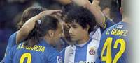
El Espanyol vuelve a los puestos europeos de clasificación tras remontar un 0-1 al Racing Club con tantos de Verdú, Coutinho y Héctor Moreno, cuya actuación deja a los cántabros -con diez en el 51 tras la expulsión de Gullón- sin arañar puntos para la salvación.
El partido ya empezó con claro dominio perico. La apuesta cántabra era más ofensiva de lo previsto pero los espacios favorecieron el fútbol del Espanyol. Los jugadores de Pochettino, muy activos arriba, tenían el control del balón y desbordaban en posesión al rival pero apenas disfrutaron de ocasiones.
Sin embargo, un mal control en el círculo centrar acabó en una fructífera contra para el equipo santanderino. En el minuto 11, Adrián puso un centro desde la banda izquierda a Stuani. El delantero uruguayo, con excesiva permisividad de Amat, enganchó el balón al primer toque y batió por bajo a Kiko Casilla (0-1).
Los de Álvaro Cervera bajaron un punto la intensidad. Y el Espanyol lo probaba, pero un tiro de falta de Verdú en el 20 y un disparo lejano de Uche en el 23 fue todo lo que consiguió a base de insistencia. Hasta el minuto 27: una asistencia milimétrica de Sergio García acabó en una vaselina para enmarcar de Verdú (1-1).
El Racing estaba obligado a atacar y en la siguiente jugada llegó la polémica. El balón se estrelló en el codo de Héctor Moreno, involuntario para el árbitro. Un susto que Coutinho borraría en el 33. El brasileño controló con el pecho un rechace del central Álvaro y puso un latigazo, desde la frontal, imposible para Toño (2-1).
Gullón dejó al equipo con diez
Los cántabros no reaccionaban. Su ataque no existía y se limitaban a expulsar a los pericos de su área, aunque el juego de bandas y las combinaciones dificultaban el trabajo de la defensa racinguista. El Espanyol no tenía problemas. Lo único negativo, la lesión de Sergio García, que dejó su puesto a Weiss en el 40.
La segunda parte no empezó mal para el Racing. A punto estuvo Christian, de cabeza, de sorprender a Kiko Casilla. Pero pronto cambiaría el guión. Gullón vio la segunda amarilla en el 51 por una falta sobre Verdú y dejó a su equipo con diez, dando muchas más facilidades al bloque catalán, que seguía buscando el tercero.
Uche caía constantemente en fuera de juego y ponía a prueba la atención de la defensa visitante. La zaga catalana apenas tenía trabajo, salvo honrosas excepciones como un fuerte disparo de Adrián, a las manos de Casilla, o una chilena frustrada de Torrejón. Pese a que el dominio era local, Cornellá-El Prat no respiraba tranquilo.
La calma llegaría en el 80. Héctor Moreno cerró el partido rematando de cabeza la segunda jugada que se originó tras un córner (3-1). El mexicano hundió definitivamente al Racing, en puestos de descenso, y dio alas al Espanyol, que gracias a estos tres puntos sueña de nuevo con jugar la próxima temporada en Europa.

2012-03-19T21:16:12Z
Chus Mateo, destituido como entrenador del Unicaja
Chus Mateo, destituido como entrenador del Unicaja
AGENCIAS
Este pasado domingo el conjunto andaluz encajó su duodécima derrota en la Liga Endesa en el duelo frente al Caja Laboral.
Chus Mateo se hizo responsable del conjunto malagueño el pasado 18 de enero de 2011 por lo que el club "agradece sus servicios".
Francisco Aurioles, el técnico ayudante, se hará cargo del equipo.
El Unicaja de Málaga ha confirmado este lunes la destitución de su técnico, Chus Mateo, después de que este pasado domingo el conjunto andaluz encajase su duodécima derrota en la Liga Endesa en el duelo frente al Caja Laboral.Unicaja no fue rival para el conjunto vasco y eso parece haber agotado la paciencia del club, que a través de un comunicado ha anunciado el cese definitivo de su técnico.Chus Mateo se hizo responsable del conjunto malagueño el pasado 18 de enero de 2011, en sustitución de Aíto García Reneses, por lo que el club "agradece sus servicios"."Francisco Aurioles, hasta el momento técnico ayudante, se hará cargo del equipo como primer entrenador en funciones", finaliza el comunicado del Unicaja.Más información en breve.
AGENCIAS
- Este pasado domingo el conjunto andaluz encajó su duodécima derrota en la Liga Endesa en el duelo frente al Caja Laboral.
- Chus Mateo se hizo responsable del conjunto malagueño el pasado 18 de enero de 2011 por lo que el club "agradece sus servicios".
- Francisco Aurioles, el técnico ayudante, se hará cargo del equipo.
El Unicaja de Málaga ha confirmado este lunes la destitución de su técnico, Chus Mateo, después de que este pasado domingo el conjunto andaluz encajase su duodécima derrota en la Liga Endesa en el duelo frente al Caja Laboral.
Unicaja no fue rival para el conjunto vasco y eso parece haber agotado la paciencia del club, que a través de un comunicado ha anunciado el cese definitivo de su técnico.
Chus Mateo se hizo responsable del conjunto malagueño el pasado 18 de enero de 2011, en sustitución de Aíto García Reneses, por lo que el club "agradece sus servicios".
"Francisco Aurioles, hasta el momento técnico ayudante, se hará cargo del equipo como primer entrenador en funciones", finaliza el comunicado del Unicaja.
Más información en breve.
2012-03-19T19:59:43Z
Muamba respira sin asistencia y reconoce a sus familiares
Muamba respira sin asistencia y reconoce a sus familiares
EFE
El futbolista del Bolton, de origen congoleño y 23 años, muestra "ligeros signos de mejoría" y que su corazón late ahora sin necesidad de medicación.
Muamba "puede mover los brazos y las piernas", aunque "su evolución a largo plazo no estará clara hasta más adelante", advirtieron los médicos.
Muamba se desploma durante el partido entre el Tottenham y el Bolton.
El centrocampista del Bolton Fabrice Muamba, que el sábado sufrió un paro cardíaco en el estadio inglés de White Hart Lane, en Tottenham, ha empezado este lunes a respirar sin asistencia y reconoce a sus familiares, informa el club británico."Ahora puede respirar independientemente, sin la ayuda de un ventilador, y es capaz de reconocer a sus familiares y de responder adecuadamente algunas preguntas. Hay signos positivos de mejora", afirmaron en un comunicado conjunto el Bolton y el hospital Chest de Londres, donde está ingresado.Sin embargo, el centro médico subrayó que su estado de salud sigue siendo "crítico", por lo que continúa ingresado en la unidad de cuidados intensivos con un seguimiento continuo por parte del personal del hospital.La buena noticia se produjo al mismo tiempo que en el estadio del Bolton se celebraba una reunión multitudinaria de aficionados para rezar por el futbolista de origen congoleño.Horas antes, el hospital había emitido un parte médico anunciando "ligeros signos de mejoría" en la salud del jugador, que podía mover los brazos y las piernas y cuyo corazón latía sin necesidad de medicación.El centrocampista sufrió una parada cardíaca en el minuto 41 del encuentro de Copa de Inglaterra que enfrentaba al Bolton con el Tottenham el pasado sábado. Los médicos trataron de reanimar al jugador sobre el terreno de juego durante diez minutos para retirarlo después en camilla, con una máscara de oxígeno.El centrocampista tardó dos horas en volver a respirar, y permanece desde entonces hospitalizado en cuidados intensivos en un centro especializado en dolencias cardíacas. El árbitro Howard Webb decidió suspender el partido, cuando ambos equipos empataban a un gol, tras consultarlo con ambos entrenadores.Hasta la fecha, Muamba ha jugado 130 partidos de la liga de Inglaterra con el Bolton, al que llegó en 2008 procedente del Birmingham.
EFE
- El futbolista del Bolton, de origen congoleño y 23 años, muestra "ligeros signos de mejoría" y que su corazón late ahora sin necesidad de medicación.
- Muamba "puede mover los brazos y las piernas", aunque "su evolución a largo plazo no estará clara hasta más adelante", advirtieron los médicos.
- Muamba se desploma durante el partido entre el Tottenham y el Bolton.
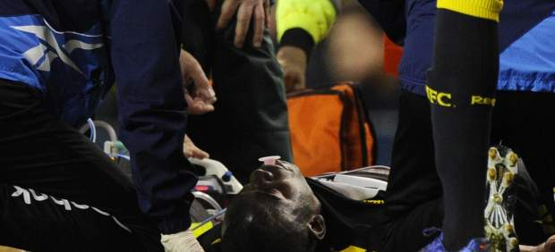
El centrocampista del Bolton Fabrice Muamba, que el sábado sufrió un paro cardíaco en el estadio inglés de White Hart Lane, en Tottenham, ha empezado este lunes a respirar sin asistencia y reconoce a sus familiares, informa el club británico.
"Ahora puede respirar independientemente, sin la ayuda de un ventilador, y es capaz de reconocer a sus familiares y de responder adecuadamente algunas preguntas. Hay signos positivos de mejora", afirmaron en un comunicado conjunto el Bolton y el hospital Chest de Londres, donde está ingresado.
Sin embargo, el centro médico subrayó que su estado de salud sigue siendo "crítico", por lo que continúa ingresado en la unidad de cuidados intensivos con un seguimiento continuo por parte del personal del hospital.
La buena noticia se produjo al mismo tiempo que en el estadio del Bolton se celebraba una reunión multitudinaria de aficionados para rezar por el futbolista de origen congoleño.
Horas antes, el hospital había emitido un parte médico anunciando "ligeros signos de mejoría" en la salud del jugador, que podía mover los brazos y las piernas y cuyo corazón latía sin necesidad de medicación.
El centrocampista sufrió una parada cardíaca en el minuto 41 del encuentro de Copa de Inglaterra que enfrentaba al Bolton con el Tottenham el pasado sábado. Los médicos trataron de reanimar al jugador sobre el terreno de juego durante diez minutos para retirarlo después en camilla, con una máscara de oxígeno.
El centrocampista tardó dos horas en volver a respirar, y permanece desde entonces hospitalizado en cuidados intensivos en un centro especializado en dolencias cardíacas. El árbitro Howard Webb decidió suspender el partido, cuando ambos equipos empataban a un gol, tras consultarlo con ambos entrenadores.
Hasta la fecha, Muamba ha jugado 130 partidos de la liga de Inglaterra con el Bolton, al que llegó en 2008 procedente del Birmingham.
2012-03-19T17:46:33Z
La 'venganza' de Pellegrini reduce la distancia entre el Real Madrid y el FC Barcelona a ocho puntos
La 'venganza' de Pellegrini reduce la distancia entre el Real Madrid y el FC Barcelona a ocho puntos
EFE
El tanto de Cazorla que significó el empate del Málaga ante el Real Madrid logró arrancar un gesto de alegría a Manuel Pellegrini.
Los blancos tienen un calendario más complicado que los azulgrana.
El Real Madrid tropieza con el Málaga y la Liga se aprieta.
El Real Madrid de José Mourinho sufrió ante el Málaga la pequeña venganza del técnico chileno Manuel Pellegrini, que logró con su equipo un punto en el estadio Santiago Bernabéu, hasta ahora inexpugnable en una Liga reactivada tras el pinchazo blanco.El golazo de Santiago Cazorla en el último suspiro del encuentro ante el Real Madrid no sólo supuso una alegría para el conjunto andaluz. El tanto del internacional español tenía un significado más intenso. Logró arrancar un gesto de alegría a Pellegrini, acostumbrado a sufrir varapalos en sus enfrentamientos contra el equipo que dirigió en la temporada 2009/2010.Entonces, el "Ingeniero" se convirtió en un "hombre récord" sin títulos en el Real Madrid (mayor puntuación en Liga -96 puntos de 114 posibles-, mayor número de victorias en casa -18- y mayor número de victorias totales, con 31). Pese a ello, el sudamericano salió por la puerta de atrás del Bernabéu, con el lastre del "alcorconazo" (eliminado de la Copa por el Alcorcón, un segunda B) y de la Liga de Campeones, motivos suficientes desde el club blanco para destituir al sudamericano.El buen trabajo del chileno no sirvió para arrebatar el título a los azulgrana, pero un par de temporadas después, el club catalán, ahora a ocho puntos de los blancos, se ha visto beneficiado de la pequeña venganza de Pellegrini, que nunca había podido conseguir una alegría ante el Real Madrid.Todo habían sido derrotas. Alguna, abultada, como el 7-0 que encajó en el Bernabéu en la primera vuelta del pasado curso, o el 0-4 de la misma campaña en La Rosaleda. Otras, más ajustadas, como el 3-2 y el 0-1 este año en la Copa del Rey. Pero, al fin y al cabo, hasta el empate de este domingo, todo habían sido decepciones.Sin embargo, Pellegrini nunca ha levantado la voz. Ni cuando ha perdido ni cuando ha empatado ante los blancos. Ni siquiera cuando Mourinho declaró en su día que nunca entrenaría a un equipo como el Málaga. Siguiendo la tendencia, después de consumar su "venganza", mantuvo la compostura."No creo que el equipo esté en el vestuario sintiendo que hizo algo histórico. No es una lucha de Málaga contra el Real Madrid ni nada particular. Empatar aquí es siempre un aliciente, el equipo jugó de igual a igual. Da una evaluación del potencial que podemos tener como equipo", dijo en rueda de prensa.Pero la venganza se sirve fría. Cazorla la selló con su golazo de falta. Y, aunque ocho puntos parecen suficientes para que el Real Madrid levante el título de Liga, los blancos tienen un calendario más complicado que los azulgrana. Visitan al Villarreal, Osasuna, Atlético de Madrid, Barcelona y Athletic. En el Bernabéu, recibirán al Sevilla y al Valencia, dos huesos duros de roer.Al final, lo que parece una pequeña victoria personal, una pequeña venganza, escenificada en un sólo punto, puede significar dentro de dos meses una gran derrota madridista. El tanto de Cazorla puede ser más que un golazo. Puede ser vital para decantar una Liga hacia el Barcelona. Como hace dos temporadas, el buen trabajo de Pellegrini, inservible para los blancos, puede que tenga el mismo efecto: otro título para el palmarés de Pep Guardiola.
EFE
- El tanto de Cazorla que significó el empate del Málaga ante el Real Madrid logró arrancar un gesto de alegría a Manuel Pellegrini.
- Los blancos tienen un calendario más complicado que los azulgrana.
- El Real Madrid tropieza con el Málaga y la Liga se aprieta.
El Real Madrid de José Mourinho sufrió ante el Málaga la pequeña venganza del técnico chileno Manuel Pellegrini, que logró con su equipo un punto en el estadio Santiago Bernabéu, hasta ahora inexpugnable en una Liga reactivada tras el pinchazo blanco.
El golazo de Santiago Cazorla en el último suspiro del encuentro ante el Real Madrid no sólo supuso una alegría para el conjunto andaluz. El tanto del internacional español tenía un significado más intenso. Logró arrancar un gesto de alegría a Pellegrini, acostumbrado a sufrir varapalos en sus enfrentamientos contra el equipo que dirigió en la temporada 2009/2010.
Entonces, el "Ingeniero" se convirtió en un "hombre récord" sin títulos en el Real Madrid (mayor puntuación en Liga -96 puntos de 114 posibles-, mayor número de victorias en casa -18- y mayor número de victorias totales, con 31). Pese a ello, el sudamericano salió por la puerta de atrás del Bernabéu, con el lastre del "alcorconazo" (eliminado de la Copa por el Alcorcón, un segunda B) y de la Liga de Campeones, motivos suficientes desde el club blanco para destituir al sudamericano.
El buen trabajo del chileno no sirvió para arrebatar el título a los azulgrana, pero un par de temporadas después, el club catalán, ahora a ocho puntos de los blancos, se ha visto beneficiado de la pequeña venganza de Pellegrini, que nunca había podido conseguir una alegría ante el Real Madrid.
Todo habían sido derrotas. Alguna, abultada, como el 7-0 que encajó en el Bernabéu en la primera vuelta del pasado curso, o el 0-4 de la misma campaña en La Rosaleda. Otras, más ajustadas, como el 3-2 y el 0-1 este año en la Copa del Rey. Pero, al fin y al cabo, hasta el empate de este domingo, todo habían sido decepciones.
Sin embargo, Pellegrini nunca ha levantado la voz. Ni cuando ha perdido ni cuando ha empatado ante los blancos. Ni siquiera cuando Mourinho declaró en su día que nunca entrenaría a un equipo como el Málaga. Siguiendo la tendencia, después de consumar su "venganza", mantuvo la compostura.
"No creo que el equipo esté en el vestuario sintiendo que hizo algo histórico. No es una lucha de Málaga contra el Real Madrid ni nada particular. Empatar aquí es siempre un aliciente, el equipo jugó de igual a igual. Da una evaluación del potencial que podemos tener como equipo", dijo en rueda de prensa.
Pero la venganza se sirve fría. Cazorla la selló con su golazo de falta. Y, aunque ocho puntos parecen suficientes para que el Real Madrid levante el título de Liga, los blancos tienen un calendario más complicado que los azulgrana. Visitan al Villarreal, Osasuna, Atlético de Madrid, Barcelona y Athletic. En el Bernabéu, recibirán al Sevilla y al Valencia, dos huesos duros de roer.
Al final, lo que parece una pequeña victoria personal, una pequeña venganza, escenificada en un sólo punto, puede significar dentro de dos meses una gran derrota madridista. El tanto de Cazorla puede ser más que un golazo. Puede ser vital para decantar una Liga hacia el Barcelona. Como hace dos temporadas, el buen trabajo de Pellegrini, inservible para los blancos, puede que tenga el mismo efecto: otro título para el palmarés de Pep Guardiola.
2012-03-19T00:42:46Z
Nueva victoria de Rafa Nadal y Marc López en la final de dobles del Indian Wells
Nueva victoria de Rafa Nadal y Marc López en la final de dobles del Indian Wells
EFE
Dominan el dobles ante los estadounidenses John Isner y Sam Querrey.
Nadal y López retoman la corona que ya consiguieron en 2010.
Nadal: "Hemos jugado muy bien y prueba de ello es que no hemos llegado a disputar ningún súper tie-break".
Los españoles Rafael Nadal y Marc López se proclamaron este domingo campeones del dobles en Indian Wells, primer Masters 1000 de la temporada, al superar por 6-2 y 7-6 (3) a los estadounidenses John Isner y Sam Querrey en 82 minutos.Nadal y López retoman así la corona que ya consiguieron en 2010 frente a Nestor y Zimonjic por 7-6 y 6-3.La pareja de españoles, que no ha cedido un solo set en todo el campeonato, suma así su cuarta victoria en cuatro finales de dobles disputadas (Doha 2009, Indian Wells 2010 y Doha 2011)."Hemos jugado muy bien y prueba de ello es que no hemos llegado a disputar ningún súper 'tie-break' en todo el torneo; hemos hecho las cosas bien prácticamente durante todo el partido y hemos estado a un nivel muy alto", dijo Nadal.Para llegar a este encuentro tuvieron que eliminar a Llodra-Zimonjic, a Paes-Stepanek y a Fyrstenberg-Matkowski en la semifinal.Dúo victoriosoComo tándem Nadal y López aumentan su registro a 26 victorias y ocho derrotas.Los españoles rompieron el saque a los estadounidenses para ponerse 2-1 por delante y ya no mirar atrás. Se anotaron el primer set en 25 minutos gracias a la anticipación de Nadal en la red y la destreza de López desde el fondo de la pista.A pesar del fortísimo viento que soplaba en la pista central del torneo, que obligó a parar el encuentro durante unos minutos, Nadal y López no bajaron su nivel y forzaron el desempate en la segunda manga, donde se llevaron la victoria con un gran punto de Nadal sorprendiendo en la red.Por su parte Isner y Querrey mantienen un registro de 42 victorias y 25 derrotas en común, con dos victorias (Memphis 2010 y Roma 2011) y tres derrotas en finales disputadas.
EFE
- Dominan el dobles ante los estadounidenses John Isner y Sam Querrey.
- Nadal y López retoman la corona que ya consiguieron en 2010.
- Nadal: "Hemos jugado muy bien y prueba de ello es que no hemos llegado a disputar ningún súper tie-break".
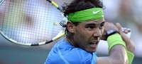
Los españoles Rafael Nadal y Marc López se proclamaron este domingo campeones del dobles en Indian Wells, primer Masters 1000 de la temporada, al superar por 6-2 y 7-6 (3) a los estadounidenses John Isner y Sam Querrey en 82 minutos.
Nadal y López retoman así la corona que ya consiguieron en 2010 frente a Nestor y Zimonjic por 7-6 y 6-3.
La pareja de españoles, que no ha cedido un solo set en todo el campeonato, suma así su cuarta victoria en cuatro finales de dobles disputadas (Doha 2009, Indian Wells 2010 y Doha 2011).
"Hemos jugado muy bien y prueba de ello es que no hemos llegado a disputar ningún súper 'tie-break' en todo el torneo; hemos hecho las cosas bien prácticamente durante todo el partido y hemos estado a un nivel muy alto", dijo Nadal.
Para llegar a este encuentro tuvieron que eliminar a Llodra-Zimonjic, a Paes-Stepanek y a Fyrstenberg-Matkowski en la semifinal.
Dúo victorioso
Como tándem Nadal y López aumentan su registro a 26 victorias y ocho derrotas.
Los españoles rompieron el saque a los estadounidenses para ponerse 2-1 por delante y ya no mirar atrás. Se anotaron el primer set en 25 minutos gracias a la anticipación de Nadal en la red y la destreza de López desde el fondo de la pista.
A pesar del fortísimo viento que soplaba en la pista central del torneo, que obligó a parar el encuentro durante unos minutos, Nadal y López no bajaron su nivel y forzaron el desempate en la segunda manga, donde se llevaron la victoria con un gran punto de Nadal sorprendiendo en la red.
Por su parte Isner y Querrey mantienen un registro de 42 victorias y 25 derrotas en común, con dos victorias (Memphis 2010 y Roma 2011) y tres derrotas en finales disputadas.
2012-03-18T22:25:16Z
Mourinho: "El árbitro se ha equivocado en dos penaltis enormes, pero no es criticable"
Mourinho: "El árbitro se ha equivocado en dos penaltis enormes, pero no es criticable"
20MINUTOS.ES
El entrenador portugués pide dos penaltis sobre Marcelo y Cristiano Ronaldo.
No quiere oír hablar de diferencia de puntos respecto al FC Barcelona.
Asegura que no es normal ganar todos los partidos con goleadas.
El entrenador del Real Madrid, José Mourinho, no ha recriminado nada a sus jugadores por el empate ante el Málaga en el descuento. El portugués ha repetido hasta en tres ocasiones que han dado todo, pero la suerte de cara a portería y dos posibles penaltis sobre Cristiano y Marcelo decidieron un partido con "un resultado normal". "Hemos hecho todo en la segunda parte para el segundo gol, del mismo modo que hemos visto el penalti a Cristiano y el penalti a Marcelo"."Empatar un partido o perder un partido es una cosa absolutamente normal. Si mi equipo hubiera perdido dos puntos por no trabajar o facilitar las cosas tendría razón para no estar satisfecho. Pero cuando el equipo deja en el campo todo lo que tiene, empatar me parece que es parte del campeonato", ha asegurado.Para Mourinho el árbitro ha tenido "dos errores muy grandes", pero asegura que no pasa nada "porque puede equivocarse". Sin embargo, ha repetido en tres ocasiones las acciones sobre Cristiano Ronaldo y Marcelo. "El árbitro se ha equivocado en dos penaltis que son enormes, pero esto no es criticable".El resultado pone fin a una racha de goleadas en el Santiago Bernabéu que sorprende a todos menos al portugués. "La cuestión es cómo marcamos tantos goles siempre y cómo estamos en un número de goles increíble. Marcar un solo gol también es normal".La diferencia de puntos respecto al Barça se reduce de diez a ocho, una distancia que no tiene en mente. "No hacemos cálculos , salimos a cada partido a ganar. Quizás lo que no es normal es ganar cada partido sin parar".Respecto a la afirmación del entrenador del Barcelona, Pep Guardiola, en la que aseguraba que ya no hay Liga, Mourinho ha afirmado que él "sabe lo que dice y por qué lo dice, pero de matemáticas todos sabemos". Quedan muchos partidos por disputarse, 33 puntos, por lo que no hace cuentas. "Nos preocupamos solo por nosotros porque si ganamos los puntos suficientes conseguiremos ser campeones, pero evidentemente la Liga está abierta", ha concluído.
20MINUTOS.ES
- El entrenador portugués pide dos penaltis sobre Marcelo y Cristiano Ronaldo.
- No quiere oír hablar de diferencia de puntos respecto al FC Barcelona.
- Asegura que no es normal ganar todos los partidos con goleadas.
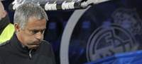
El entrenador del Real Madrid, José Mourinho, no ha recriminado nada a sus jugadores por el empate ante el Málaga en el descuento. El portugués ha repetido hasta en tres ocasiones que han dado todo, pero la suerte de cara a portería y dos posibles penaltis sobre Cristiano y Marcelo decidieron un partido con "un resultado normal". "Hemos hecho todo en la segunda parte para el segundo gol, del mismo modo que hemos visto el penalti a Cristiano y el penalti a Marcelo".
"Empatar un partido o perder un partido es una cosa absolutamente normal. Si mi equipo hubiera perdido dos puntos por no trabajar o facilitar las cosas tendría razón para no estar satisfecho. Pero cuando el equipo deja en el campo todo lo que tiene, empatar me parece que es parte del campeonato", ha asegurado.
Para Mourinho el árbitro ha tenido "dos errores muy grandes", pero asegura que no pasa nada "porque puede equivocarse". Sin embargo, ha repetido en tres ocasiones las acciones sobre Cristiano Ronaldo y Marcelo. "El árbitro se ha equivocado en dos penaltis que son enormes, pero esto no es criticable".
El resultado pone fin a una racha de goleadas en el Santiago Bernabéu que sorprende a todos menos al portugués. "La cuestión es cómo marcamos tantos goles siempre y cómo estamos en un número de goles increíble. Marcar un solo gol también es normal".
La diferencia de puntos respecto al Barça se reduce de diez a ocho, una distancia que no tiene en mente. "No hacemos cálculos , salimos a cada partido a ganar. Quizás lo que no es normal es ganar cada partido sin parar".
Respecto a la afirmación del entrenador del Barcelona, Pep Guardiola, en la que aseguraba que ya no hay Liga, Mourinho ha afirmado que él "sabe lo que dice y por qué lo dice, pero de matemáticas todos sabemos". Quedan muchos partidos por disputarse, 33 puntos, por lo que no hace cuentas. "Nos preocupamos solo por nosotros porque si ganamos los puntos suficientes conseguiremos ser campeones, pero evidentemente la Liga está abierta", ha concluído.
2012-03-18T22:02:49Z
Federer gana a Isner y logra su cuarta corona en Indian Wells
Federer gana a Isner y logra su cuarta corona en Indian Wells
EFE
El tenista suizo ha completado un fin de semana espectacular (7-6, 6-3).
El cañonero norteamericano no pudo repetir sorpresa como ante Djokovic.
Roger Federer se lleva el primer Masters 1.000 de la temporada 2012.
El suizo Roger Federer superó al estadounidense John Isner por 7-6 (7) y 6-3 en 81 minutos en la final de Indian Wells, de forma que suma su cuarta corona en el desierto californiano e iguala con Rafael Nadal en cuanto a número de títulos obtenidos en campeonatos Masters 1.000, con 19. Federer se convirtió en el jugador con más títulos en Indian Wells y superó así la marca de Jimmy Connors y Michael Chang, que ganaron este torneo en tres ocasiones.Para Federer, que se embolsa un millón de dólares, es su victoria número 39 en los últimos 41 partidos, con derrotas en la semifinal del Open de Australia ante Nadal y ante el propio Isner en la Copa Davis. En este torneo ha vengado sendas derrotas. El de Basilea volvió a estar brillante desde el fondo de la pista, armando su derecha con precisión y potencia frente a un Isner defensivo en la recepción pero inapelable al saque. Con 3-2 a favor del suizo el partido se detuvo durante unos 10 minutos debido a la aparición de la lluvia, pero eso no evitó que el gigante estadounidense perdiera la concentración y, al pisar la pista de nuevo, le endosó a su rival un juego en blanco.El tie-break, decisivoLa igualdad resultaba abrumadora. El dominio de cada uno con su servicio llevó el choque a un inevitable desempate, a pesar de que Federer puso en serios aprietos a última hora al norteamericano con una bola de set y 6-5 para el número tres del mundo. Isner salvó entonces dos nuevas bolas de set para dejar las tablas (7-7) en el 'tie-break', y a continuación Federer se sacó de la manga una preciosa volea que superó los centímetros de su contrincante para que la pelota cayera muerta sobre la línea. El suizo no perdonó con su saque y se llevó el primer set. Parecía que la tónica se iba a repetir en el segundo, pero el estadounidense tropezó con 3-3 en el marcador y no pudo levantar las dos bolas de rotura que obtuvo Federer, cediendo su saque con un fallo garrafal al subir a la red. Fue el principio del fin para él, ya que el suizo, con siete puntos de saque directo (por cuatro de su rival), fue implacable en los últimos compases, especialmente con el alto porcentaje de puntos ganados con su servicio (33/35, 94 por ciento). Isner buscaba hacerse con su primer título en un Masters 1.000, aunque con su actuación en el torneo entra ahora en el 'top 10' del ránking ATP.
EFE
- El tenista suizo ha completado un fin de semana espectacular (7-6, 6-3).
- El cañonero norteamericano no pudo repetir sorpresa como ante Djokovic.
- Roger Federer se lleva el primer Masters 1.000 de la temporada 2012.
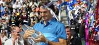
El suizo Roger Federer superó al estadounidense John Isner por 7-6 (7) y 6-3 en 81 minutos en la final de Indian Wells, de forma que suma su cuarta corona en el desierto californiano e iguala con Rafael Nadal en cuanto a número de títulos obtenidos en campeonatos Masters 1.000, con 19.
Federer se convirtió en el jugador con más títulos en Indian Wells y superó así la marca de Jimmy Connors y Michael Chang, que ganaron este torneo en tres ocasiones.
Para Federer, que se embolsa un millón de dólares, es su victoria número 39 en los últimos 41 partidos, con derrotas en la semifinal del Open de Australia ante Nadal y ante el propio Isner en la Copa Davis. En este torneo ha vengado sendas derrotas.
El de Basilea volvió a estar brillante desde el fondo de la pista, armando su derecha con precisión y potencia frente a un Isner defensivo en la recepción pero inapelable al saque.
Con 3-2 a favor del suizo el partido se detuvo durante unos 10 minutos debido a la aparición de la lluvia, pero eso no evitó que el gigante estadounidense perdiera la concentración y, al pisar la pista de nuevo, le endosó a su rival un juego en blanco.
El tie-break, decisivo
La igualdad resultaba abrumadora. El dominio de cada uno con su servicio llevó el choque a un inevitable desempate, a pesar de que Federer puso en serios aprietos a última hora al norteamericano con una bola de set y 6-5 para el número tres del mundo.
Isner salvó entonces dos nuevas bolas de set para dejar las tablas (7-7) en el 'tie-break', y a continuación Federer se sacó de la manga una preciosa volea que superó los centímetros de su contrincante para que la pelota cayera muerta sobre la línea.
El suizo no perdonó con su saque y se llevó el primer set.
Parecía que la tónica se iba a repetir en el segundo, pero el estadounidense tropezó con 3-3 en el marcador y no pudo levantar las dos bolas de rotura que obtuvo Federer, cediendo su saque con un fallo garrafal al subir a la red.
Fue el principio del fin para él, ya que el suizo, con siete puntos de saque directo (por cuatro de su rival), fue implacable en los últimos compases, especialmente con el alto porcentaje de puntos ganados con su servicio (33/35, 94 por ciento).
Isner buscaba hacerse con su primer título en un Masters 1.000, aunque con su actuación en el torneo entra ahora en el 'top 10' del ránking ATP.
2012-03-18T20:13:58Z
Azarenka gana Indian Wells con una exhibición ante Sharapova
Azarenka gana Indian Wells con una exhibición ante Sharapova
EFE
La bielorrusa, número uno del mundo, no tuvo piedad en la final (6-2, 6-3).
Lleva 23 victorias este 2012, aún no conoce la derrota y lleva cuatro títulos.
Azarenka también derrotó a Sharapova en la final del Open de Australia 2012.
La bielorrusa Victoria Azarenka, número uno del mundo, se alzó con el título de Indian Wells, primer Masters 1.000 de la temporada, con una plácido triunfo frente a la rusa María Sharapova, número dos, por 6-2 y 6-3 en una hora y 26 minutos. Azarenka, que amplía su registro este año a 23 victorias y ninguna derrota, suma así su cuarto título en 2012 tras los obtenidos en Sydney, Australia y Doha. El premio en metálico es de un millón de dólares.Era la primera vez que las dos mejores raquetas femeninas de la WTA se medían en la final del torneo del desierto californiano desde 2008. Azarenka se hizo con el primer set en 40 minutos gracias al alto porcentaje de puntos ganados con su servicio (13/16, 81 por ciento) y a su dominio desde el fondo de la pista ante una Sharapova sin gran carga en las piernas después de que su rival en semifinales, la serbia Ana Ivanovic, se retirase a las primeras de cambio en el segundo set del partido disputado el sábado. La número uno del mundo, que disputaba su sexta final consecutiva, se fue directa a por el partido en la segunda manga con dos roturas de saque consecutivas (3-0), y cuando peor pintaban las cosas para su rival, Sharapova reaccionó con garra (4-3) insuflando más ritmo y una mayor intensidad a su juego. Pero Azarenka era un muro. No perdió la concentración y finiquitó el partido con la tranquilidad de quien se sabe intocable. Así fue una vez más. De esta forma la estadística de los enfrentamientos directos entre ambas tenistas queda con cinco victorias y tres derrotas para Azarenka, que aún no conoce la derrota frente a Sharapova en una final (4-0 tras Stanford 2010, Miami 2011, Australia 2012 e Indian Wells hoy). La rusa, ganadora en Indian Wells en 2006, no pudo vengar la reciente derrota en la final del Open de Australia. Aspiraba a convertirse en la octava tenista en conseguir el doblete en Indian Wells (Martina Navratilova, Mary Joe Fernández, Steffi Graf, Lindsay Davenport, Serena Williams, Daniela Hantuchova y Kim Clijsters).
EFE
- La bielorrusa, número uno del mundo, no tuvo piedad en la final (6-2, 6-3).
- Lleva 23 victorias este 2012, aún no conoce la derrota y lleva cuatro títulos.
- Azarenka también derrotó a Sharapova en la final del Open de Australia 2012.
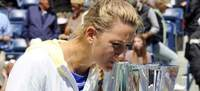
La bielorrusa Victoria Azarenka, número uno del mundo, se alzó con el título de Indian Wells, primer Masters 1.000 de la temporada, con una plácido triunfo frente a la rusa María Sharapova, número dos, por 6-2 y 6-3 en una hora y 26 minutos.
Azarenka, que amplía su registro este año a 23 victorias y ninguna derrota, suma así su cuarto título en 2012 tras los obtenidos en Sydney, Australia y Doha. El premio en metálico es de un millón de dólares.
Era la primera vez que las dos mejores raquetas femeninas de la WTA se medían en la final del torneo del desierto californiano desde 2008.
Azarenka se hizo con el primer set en 40 minutos gracias al alto porcentaje de puntos ganados con su servicio (13/16, 81 por ciento) y a su dominio desde el fondo de la pista ante una Sharapova sin gran carga en las piernas después de que su rival en semifinales, la serbia Ana Ivanovic, se retirase a las primeras de cambio en el segundo set del partido disputado el sábado.
La número uno del mundo, que disputaba su sexta final consecutiva, se fue directa a por el partido en la segunda manga con dos roturas de saque consecutivas (3-0), y cuando peor pintaban las cosas para su rival, Sharapova reaccionó con garra (4-3) insuflando más ritmo y una mayor intensidad a su juego.
Pero Azarenka era un muro. No perdió la concentración y finiquitó el partido con la tranquilidad de quien se sabe intocable. Así fue una vez más.
De esta forma la estadística de los enfrentamientos directos entre ambas tenistas queda con cinco victorias y tres derrotas para Azarenka, que aún no conoce la derrota frente a Sharapova en una final (4-0 tras Stanford 2010, Miami 2011, Australia 2012 e Indian Wells hoy).
La rusa, ganadora en Indian Wells en 2006, no pudo vengar la reciente derrota en la final del Open de Australia. Aspiraba a convertirse en la octava tenista en conseguir el doblete en Indian Wells (Martina Navratilova, Mary Joe Fernández, Steffi Graf, Lindsay Davenport, Serena Williams, Daniela Hantuchova y Kim Clijsters).
2012-03-18T19:13:42Z
De campeón del mundo y héroe nacional a sobrevivir recogiendo botellas de plástico
De campeón del mundo y héroe nacional a sobrevivir recogiendo botellas de plástico
EFE
Jakov Fak se convirtió en héroe de Eslovenia al conquistar el pasado día 6 el título de campeón mundial en carrera biatlón de 20 kilómetros.
Recoge botellas de plástico y luego las lleva a Croacia para venderlas.
Recibe 150 euros por cada 2.250 botellas de plástico vendidas.
Fak ganó anteriormente dos medallas de bronce para Croacia en Vancouver 2010.
El croata Jakov Fak, campeón del mundo de biatlón que representa a Eslovenia, ha admitido esta semana que recolecta botellas de plástico para sobrevivir, informó la televisión privada eslovena Pop TV.Fak (quien se convirtió en héroe de Eslovenia al conquistar el pasado día 6, en el Campeonato mundial de Ruhpolding (Alemania), el título de campeón mundial en carrera biatlón de 20 kilómetros), reconoció que recoge las botellas y luego las lleva a Croacia para venderlas.Ello pese a la prohibición de introducir embalaje usado en Croacia."En total, he ganado unos 150 euros. Tal vez no sea mucho, pero así tengo para ir al cine", declaró Fak a la citada fuente.Para esa cantidad, es necesario llevar de Eslovenia a Croacia alrededor de 2.250 botellas de plástico, y la misma alcanza para ir 25 veces al cine en Eslovenia, o 37 veces en Croacia.Fak ganó anteriormente dos medallas de bronce para Croacia, una de ellas en los Juegos Olímpicos de Vancouver (2010).
EFE
- Jakov Fak se convirtió en héroe de Eslovenia al conquistar el pasado día 6 el título de campeón mundial en carrera biatlón de 20 kilómetros.
- Recoge botellas de plástico y luego las lleva a Croacia para venderlas.
- Recibe 150 euros por cada 2.250 botellas de plástico vendidas.
- Fak ganó anteriormente dos medallas de bronce para Croacia en Vancouver 2010.
El croata Jakov Fak, campeón del mundo de biatlón que representa a Eslovenia, ha admitido esta semana que recolecta botellas de plástico para sobrevivir, informó la televisión privada eslovena Pop TV.
Fak (quien se convirtió en héroe de Eslovenia al conquistar el pasado día 6, en el Campeonato mundial de Ruhpolding (Alemania), el título de campeón mundial en carrera biatlón de 20 kilómetros), reconoció que recoge las botellas y luego las lleva a Croacia para venderlas.
Ello pese a la prohibición de introducir embalaje usado en Croacia.
"En total, he ganado unos 150 euros. Tal vez no sea mucho, pero así tengo para ir al cine", declaró Fak a la citada fuente.
Para esa cantidad, es necesario llevar de Eslovenia a Croacia alrededor de 2.250 botellas de plástico, y la misma alcanza para ir 25 veces al cine en Eslovenia, o 37 veces en Croacia.
Fak ganó anteriormente dos medallas de bronce para Croacia, una de ellas en los Juegos Olímpicos de Vancouver (2010).
2012-03-18T18:40:17Z
Nuchar Eurochamp, nuevo líder de la Superliga femenina
Nuchar Eurochamp, nuevo líder de la Superliga femenina
RFEVB
Las riojanas lograron una gran victoria en la pista de Valeriano Allés Menorca.
El triunfo deja a Nuchar Eurochamp Murillo como líder en solitario de la SFV.
UCAM Murcia se impuso a Universidad de Burgos y sube hasta la tercera plaza.
Nuchar Eurochamp Murillo es el nuevo líder de la Superliga Femenina. Las riojanas consiguieron asaltar la pista del Valeriano Allés Menorca Volei y se aúpan a la primera posición. El conjunto de Carlos Arratia se sacudió el amargo sabor de la Copa de la Reina y obtiene un importante triunfo ante las vigentes campeonas que acusaron los problemas físicos arrastrados durante toda la semana. Si valioso es el triunfo de las riojanas, igual de importante es el conseguido por UCAM Vóley Murcia ante Universidad de Burgos. Las murcianas suben hasta la tercera posición y consiguen una victoria ante un rival directo por los playoff.Otro duelo directo se vivía en Torrelavega, y las locales sufrieron para llevarse el triunfo ante Jamper Aguere. La espectacular actuación de Cathaysa Trujillo y Angelina Waterman se topó con el juego colectivo de Cantabria Deporte para salir de la penúltima plaza. El derby canario completó la jornada con victoria para CV Playa de las Canteras. Las grancanarias no dieron opción a Cuesta Piedra Santa Cruz y retoman la lucha por alcanzar los playoff.Nuchar Eurochamp Murillo venció en Ciutadella y se aupa a la primera plaza de la SFV. Las riojanas supieron dar la vuelta al primer set, controlado por las menorquinas en sus inicios y minaron la moral de las actuales campeonas dejándolas sin capacidad de respuesta en los dos siguientes sets. Las jugadoras de Carlos Arratia fueron de menos a más en el choque y consiguieron gracias a los puntos de Regla Bell y Daniella Da Silva controlar el encuentro. Perder el primer set sacó del partido a las locales, que comenzaron a acumular errores en su juego, impidiendo al equipo dirigido por Chema Rodríguez llegar con opciones a la recta final de cada set. El sólido bloqueo visitante con Ati García a gran nivel ayudó al control de las riojanas para cerrar el encuentro.UCAM Murcia se tomó cumplida revancha de la eliminación en la Copa de la Reina y obtuvo un valioso triunfo ante Universidad de Burgos en un duelo directo por los playoff. Las burgalesas acusaron la ausencia de Regina Miloserdova, aún con molestias, y la necesidad de jugar con Mireya Delgado como líbero. Las murcianas solventaron el primer set, dominado por las burgalesas en una gran reacción. Las jugadoras de Pascual Saurín fueron encontrando en el bloqueo su mejor arma, y tanto Patricia Barrio como Amparo Hopf daban con sus remates el parcial. 6 bloqueos en el segundo set dieron ventaja a las locales que tuvieron problemas para cerrar el parcial. Cristina Alves, Soraya Fraga y Juliana Ribeiro mantenían a Universidad de Burgos en el choque con una reacción que no tuvo recompensa. El tercer set volvió a mostrar las alternativas entre ambos conjuntos, pero en la recta final los errores burgaleses y el acierto local sentenció el triunfo de UCAM Vóley Murcia que asciende a la tercera posición.Cantabria Deporte escapó de la penúltima plaza en un duelo directo ante Jamper Aguere. Las cántabras aprovecharon el alto número de errores de las tinerfeñas para asegurar un importantísimo triunfo en un ajustado, intenso y emocionante encuentro. Las aurinegras comenzaron mandando en el partido merced al extraordinario rendimiento de Cathaysa Trujillo y Angelina Waterman. Ambas, por encima de los treinta puntos, suplieron a la perfección a la lesionada Jessica Rivero y vencieron en un primer set, que mostró la capacidad de reacción del conjunto local. Las pupilas de Marcelo de Stefano igualaron el set tras ir nueve puntos abajo y convirtieron su capacidad de trabajo en la senda para lograr la victoria. Aitana Ballingha y Alejandra Gómez lideraron a sus compañeras para obtener la supremacía en el choque, coronada en un cuarto set con un agónico final. Los dos equipos gozaban de opciones pero al final, las cántabras superaban el eficaz bloqueo tinerfeño para hacerse con la victoria.CV Playa de las Canteras consiguió la victoria en el derby canario ante Cuesta Piedra Santa Cruz y vuelve a mirar hacia las posiciones de playoff. El conjunto de Danny López realizó un gran planteamiento dejando sin capacidad de reacción a las tinerfeñas. El primer set fue e lmás igualado de los tres. Los errores de las grancanarias mantuvieron nivelado el marcador, pero tras el segundo tiempo técnico, los remates de Lynne Beattie y el trabajo en la red de las centrales de CV Playa de las Canteras llevó el set a su desenlace. Las locales no redujeron su rendimiento y fueron aumentando su control en el choque hasta asegurar el triunfo por un contundente 3-0.Resultados de la jornadaCV Playa de las Canteras - Cuesta Piedra Santa Cruz 3 - 0 (25-15/25-12/25-9)UCAM Voley Murcia - Universidad de Burgos 3 - 0 (25-22/25-22/25-22)Valeriano Allés Menorca Volei - Nuchar Eurochamp Murillo 0 - 3 (25-27/18-25/19-25)Cantabria Deporte - Jamper Aguere 3 - 1 (24-26/25-20/26-24/33-31)
RFEVB
- Las riojanas lograron una gran victoria en la pista de Valeriano Allés Menorca.
- El triunfo deja a Nuchar Eurochamp Murillo como líder en solitario de la SFV.
- UCAM Murcia se impuso a Universidad de Burgos y sube hasta la tercera plaza.
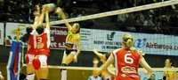
Nuchar Eurochamp Murillo es el nuevo líder de la Superliga Femenina. Las riojanas consiguieron asaltar la pista del Valeriano Allés Menorca Volei y se aúpan a la primera posición. El conjunto de Carlos Arratia se sacudió el amargo sabor de la Copa de la Reina y obtiene un importante triunfo ante las vigentes campeonas que acusaron los problemas físicos arrastrados durante toda la semana. Si valioso es el triunfo de las riojanas, igual de importante es el conseguido por UCAM Vóley Murcia ante Universidad de Burgos. Las murcianas suben hasta la tercera posición y consiguen una victoria ante un rival directo por los playoff.
Otro duelo directo se vivía en Torrelavega, y las locales sufrieron para llevarse el triunfo ante Jamper Aguere. La espectacular actuación de Cathaysa Trujillo y Angelina Waterman se topó con el juego colectivo de Cantabria Deporte para salir de la penúltima plaza. El derby canario completó la jornada con victoria para CV Playa de las Canteras. Las grancanarias no dieron opción a Cuesta Piedra Santa Cruz y retoman la lucha por alcanzar los playoff.
Nuchar Eurochamp Murillo venció en Ciutadella y se aupa a la primera plaza de la SFV. Las riojanas supieron dar la vuelta al primer set, controlado por las menorquinas en sus inicios y minaron la moral de las actuales campeonas dejándolas sin capacidad de respuesta en los dos siguientes sets. Las jugadoras de Carlos Arratia fueron de menos a más en el choque y consiguieron gracias a los puntos de Regla Bell y Daniella Da Silva controlar el encuentro. Perder el primer set sacó del partido a las locales, que comenzaron a acumular errores en su juego, impidiendo al equipo dirigido por Chema Rodríguez llegar con opciones a la recta final de cada set. El sólido bloqueo visitante con Ati García a gran nivel ayudó al control de las riojanas para cerrar el encuentro.
UCAM Murcia se tomó cumplida revancha de la eliminación en la Copa de la Reina y obtuvo un valioso triunfo ante Universidad de Burgos en un duelo directo por los playoff. Las burgalesas acusaron la ausencia de Regina Miloserdova, aún con molestias, y la necesidad de jugar con Mireya Delgado como líbero. Las murcianas solventaron el primer set, dominado por las burgalesas en una gran reacción. Las jugadoras de Pascual Saurín fueron encontrando en el bloqueo su mejor arma, y tanto Patricia Barrio como Amparo Hopf daban con sus remates el parcial. 6 bloqueos en el segundo set dieron ventaja a las locales que tuvieron problemas para cerrar el parcial. Cristina Alves, Soraya Fraga y Juliana Ribeiro mantenían a Universidad de Burgos en el choque con una reacción que no tuvo recompensa. El tercer set volvió a mostrar las alternativas entre ambos conjuntos, pero en la recta final los errores burgaleses y el acierto local sentenció el triunfo de UCAM Vóley Murcia que asciende a la tercera posición.
Cantabria Deporte escapó de la penúltima plaza en un duelo directo ante Jamper Aguere. Las cántabras aprovecharon el alto número de errores de las tinerfeñas para asegurar un importantísimo triunfo en un ajustado, intenso y emocionante encuentro. Las aurinegras comenzaron mandando en el partido merced al extraordinario rendimiento de Cathaysa Trujillo y Angelina Waterman. Ambas, por encima de los treinta puntos, suplieron a la perfección a la lesionada Jessica Rivero y vencieron en un primer set, que mostró la capacidad de reacción del conjunto local. Las pupilas de Marcelo de Stefano igualaron el set tras ir nueve puntos abajo y convirtieron su capacidad de trabajo en la senda para lograr la victoria. Aitana Ballingha y Alejandra Gómez lideraron a sus compañeras para obtener la supremacía en el choque, coronada en un cuarto set con un agónico final. Los dos equipos gozaban de opciones pero al final, las cántabras superaban el eficaz bloqueo tinerfeño para hacerse con la victoria.
CV Playa de las Canteras consiguió la victoria en el derby canario ante Cuesta Piedra Santa Cruz y vuelve a mirar hacia las posiciones de playoff. El conjunto de Danny López realizó un gran planteamiento dejando sin capacidad de reacción a las tinerfeñas. El primer set fue e lmás igualado de los tres. Los errores de las grancanarias mantuvieron nivelado el marcador, pero tras el segundo tiempo técnico, los remates de Lynne Beattie y el trabajo en la red de las centrales de CV Playa de las Canteras llevó el set a su desenlace. Las locales no redujeron su rendimiento y fueron aumentando su control en el choque hasta asegurar el triunfo por un contundente 3-0.
Resultados de la jornada
CV Playa de las Canteras - Cuesta Piedra Santa Cruz 3 - 0 (25-15/25-12/25-9)
UCAM Voley Murcia - Universidad de Burgos 3 - 0 (25-22/25-22/25-22)
Valeriano Allés Menorca Volei - Nuchar Eurochamp Murillo 0 - 3 (25-27/18-25/19-25)
Cantabria Deporte - Jamper Aguere 3 - 1 (24-26/25-20/26-24/33-31)
2012-03-18T18:21:37Z
El Atlético cosecha en Mallorca su primera derrota como visitante
El Atlético cosecha en Mallorca su primera derrota como visitante
EFE
Un autogol de Godín y un tanto de Pereira pusieron por delante a los baleares.
El Mallorca se quedó con uno menos por roja a Ramis y Falcao falló el penalti.
El delantero colombiano marcó luego un golazo pero resultó insuficiente (2-1).
Estadísticas del partido | Clasificación de la Liga.
El Mallorca ha infligido al Atlético de Madrid su primera derrota como visitante desde que Simeone entrena al equipo, al derrotarlo 2-1 en el Iberostar Estadio, en un partido en el que los baleares acabaron con diez jugadores por la expulsión del central Iván Ramis (min. 51), y el colombiano Radamel Falcao falló un penalti. Todos los goles fueron marcados en la segunda parte. El Mallorca se puso 2-0 en el marcador en apenas cuatro minutos, y redujo las diferencias Falcao con una vaselina espectacular.El Atlético, que pudo haber acusado el cansancio de su partido europeo ante el Besiktas en Estambul el pasado jueves, peleó hasta el final por el empate, pero lo impidió un Mallorca muy serio, que con esta victoria da un paso de gigante en la lucha por la permanencia. El equipo balear remató en dos ocasiones ante la portería rival, y los 'colchoneros', en una en toda la primera parte, estadística que refleja a la perfección lo que fueron los primeros 45 minutos en el Iberostar Estadio. El resto fue un ejercicio de gran derroche físico, largas carreras con nula recompensa y pelea intensa en la zona ancha, algo por lo demás esperado cuando se enfrentan dos equipos dirigidos por técnicos tan exigentes como el 'Cholo' Simeone y Joaquín Caparrós. Con las áreas bloqueadas por defensas siempre superiores en número a los atacantes, las contadas ocasiones de gol llegaron por aciertos puntuales. El 'Chori' Castro (min. 23) remató desviado tras robar un balón, y Víctor (min. 43) puso a prueba a Curtois; la oportunidad del Atlético la tuvo Mario Suárez con un gran cabezazo que Dudú Aouate envió al córner. Todo fue muy distinto en la reanudación. En los primero cuatro minutos, el Mallorca daba lo que parecía un golpe definitivo al partido con dos goles, el primero, autogol de Godín, y el segundo, un latigazo con la derecha imparable del francés Michael Pereira. Pero, la reacción del Atlético no se hizo esperar. En el minuto 51 fue expulsado con tarjeta roja directa Iván Ramis por impedir un gol con la mano tras una excelente jugada de estrategia. El penalti lanzado por el colombiano Radamel Falcao lo detuvo Aouate. Falcao enmendó su fallo poco después (min. 66) al marcar un golazo de vaselina aprovechando que Aouate estaba un poco adelantado. Con más de media hora por delante y con superioridad numérica en el campo, el equipo del 'Cholo' Simeone encerró al Mallorca en su campo en busca del empate, como mal menor. Fran Mérida, que había sustituido a Juanfran, estrelló un disparo en el palo (min. 63), todo ello, en medio de un dominio absoluto de las acciones por parte de los 'colchoneros'. El Mallorca, sin embargo, se aplicó en defensa pese a jugar en inferioridad numérica hasta conseguir un triunfo conquistado con gran sufrimiento ante un rival que da un paso atrás en sus aspiraciones europeas.Ficha técnica:2-Mallorca: Aouate, Chico, Ramis, Nunes, Cáceres: Pereira, Martí, Tejera (Tissone, min. 41), Castro (Pina, min. 82); Víctor y Hemed (Cendrós, min. 54) 1-Atlético de Madrid: Curtois; Juanfran (Fran Mérida, min. 61), Miranda, Godín, Filipe Luis; Salvio, Gabi, Mario Suárez (Arda, min. 57), Adrián; Koke y Falcao. Goles: 1-0, min. 47: Godín en propia puerta, 2-0, min. 49: Pereira; 2-1: min. 66: Falcao Árbitro: Turienzo Álvarez (comité castellano-leonés). Expulsó con tarjeta roja directa a Iván Ramis en el minuto 51. Amonestó al 'Chori' Castro, Aouate, Gabi. Incidencias: Partido correspondiente a la vigésimo octava jornada del campeonato de Liga disputado en el Iberostar Estadio ante 16.857 espectadores). Antes del partido se guardó un minuto de silencio por el fallecimiento del expresidente del Mallorca en la década de los sesenta, Jaume Rosselló.
EFE
- Un autogol de Godín y un tanto de Pereira pusieron por delante a los baleares.
- El Mallorca se quedó con uno menos por roja a Ramis y Falcao falló el penalti.
- El delantero colombiano marcó luego un golazo pero resultó insuficiente (2-1).
- Estadísticas del partido | Clasificación de la Liga.

El Mallorca ha infligido al Atlético de Madrid su primera derrota como visitante desde que Simeone entrena al equipo, al derrotarlo 2-1 en el Iberostar Estadio, en un partido en el que los baleares acabaron con diez jugadores por la expulsión del central Iván Ramis (min. 51), y el colombiano Radamel Falcao falló un penalti.
Todos los goles fueron marcados en la segunda parte. El Mallorca se puso 2-0 en el marcador en apenas cuatro minutos, y redujo las diferencias Falcao con una vaselina espectacular.
El Atlético, que pudo haber acusado el cansancio de su partido europeo ante el Besiktas en Estambul el pasado jueves, peleó hasta el final por el empate, pero lo impidió un Mallorca muy serio, que con esta victoria da un paso de gigante en la lucha por la permanencia.
El equipo balear remató en dos ocasiones ante la portería rival, y los 'colchoneros', en una en toda la primera parte, estadística que refleja a la perfección lo que fueron los primeros 45 minutos en el Iberostar Estadio.
El resto fue un ejercicio de gran derroche físico, largas carreras con nula recompensa y pelea intensa en la zona ancha, algo por lo demás esperado cuando se enfrentan dos equipos dirigidos por técnicos tan exigentes como el 'Cholo' Simeone y Joaquín Caparrós.
Con las áreas bloqueadas por defensas siempre superiores en número a los atacantes, las contadas ocasiones de gol llegaron por aciertos puntuales.
El 'Chori' Castro (min. 23) remató desviado tras robar un balón, y Víctor (min. 43) puso a prueba a Curtois; la oportunidad del Atlético la tuvo Mario Suárez con un gran cabezazo que Dudú Aouate envió al córner.
Todo fue muy distinto en la reanudación. En los primero cuatro minutos, el Mallorca daba lo que parecía un golpe definitivo al partido con dos goles, el primero, autogol de Godín, y el segundo, un latigazo con la derecha imparable del francés Michael Pereira.
Pero, la reacción del Atlético no se hizo esperar. En el minuto 51 fue expulsado con tarjeta roja directa Iván Ramis por impedir un gol con la mano tras una excelente jugada de estrategia. El penalti lanzado por el colombiano Radamel Falcao lo detuvo Aouate.
Falcao enmendó su fallo poco después (min. 66) al marcar un golazo de vaselina aprovechando que Aouate estaba un poco adelantado.
Con más de media hora por delante y con superioridad numérica en el campo, el equipo del 'Cholo' Simeone encerró al Mallorca en su campo en busca del empate, como mal menor.
Fran Mérida, que había sustituido a Juanfran, estrelló un disparo en el palo (min. 63), todo ello, en medio de un dominio absoluto de las acciones por parte de los 'colchoneros'.
El Mallorca, sin embargo, se aplicó en defensa pese a jugar en inferioridad numérica hasta conseguir un triunfo conquistado con gran sufrimiento ante un rival que da un paso atrás en sus aspiraciones europeas.
Ficha técnica:
2-Mallorca: Aouate, Chico, Ramis, Nunes, Cáceres: Pereira, Martí, Tejera (Tissone, min. 41), Castro (Pina, min. 82); Víctor y Hemed (Cendrós, min. 54)
1-Atlético de Madrid: Curtois; Juanfran (Fran Mérida, min. 61), Miranda, Godín, Filipe Luis; Salvio, Gabi, Mario Suárez (Arda, min. 57), Adrián; Koke y Falcao.
Goles: 1-0, min. 47: Godín en propia puerta, 2-0, min. 49: Pereira; 2-1: min. 66: Falcao
Árbitro: Turienzo Álvarez (comité castellano-leonés). Expulsó con tarjeta roja directa a Iván Ramis en el minuto 51. Amonestó al 'Chori' Castro, Aouate, Gabi.
Incidencias: Partido correspondiente a la vigésimo octava jornada del campeonato de Liga disputado en el Iberostar Estadio ante 16.857 espectadores). Antes del partido se guardó un minuto de silencio por el fallecimiento del expresidente del Mallorca en la década de los sesenta, Jaume Rosselló.
2012-03-18T16:45:10Z
El Inter empata contra el Atalanta y se le escapa la Champions
El Inter empata contra el Atalanta y se le escapa la Champions
EFE
Los 'nerazzurri', octavos, necesitaban una victoria para escalar en la tabla (0-0).
Diego Milito falló un penalti en el minuto 24 por una falta de Bellini sobre Pazzini.
El Inter no logró pasar del empate ante el Atalanta, en un nuevo golpe para los hombres de Claudio Ranieri tras su eliminación en octavos de final de la Liga de Campeones por el Marsella el pasado martes.En una temporada marcada por los altibajos, los 'nerazzurri', octavos en la clasificación, necesitaban una victoria para escalar en la tabla y poder mantener las esperanzas sobre la posibilidad de jugar la 'Champions' la próxima temporada. Sin embargo, el resultado ante el Atalanta aumenta las dudas, ya expresadas por el presiente de la entidad, Massimo Moratti, de que el equipo pueda alcanzar el tercer puesto que les daría la opción de estar en la máxima competición por clubes europea. Los 'nerazzurri' evidenciaron problemas para estar a la altura de las expectativas, y aunque no les faltaron ni las ganas ni las ocasiones para cerrar el encuentro a su favor, no lograron transformar sus oportunidades. Entre las más claras, estuvo la del argentino Diego Milito, que en el minuto 24 falló un penalti por una falta de Bellini sobre Pazzini, tras un saque de córner del brasileño Maicon para el conjunto milanés. 'El Príncipe' pareció querer engañar al portero desde los 11 metros con un tiro a ras de suelo, aunque no lo consiguió ya que el meta del Atalanta logró despejarlo sin problemas. Milito encadenó así dos penaltis sin transformar en dos partidos consecutivos, tras el que falló ante el Chievo Verona en la anterior jornada.
EFE
- Los 'nerazzurri', octavos, necesitaban una victoria para escalar en la tabla (0-0).
- Diego Milito falló un penalti en el minuto 24 por una falta de Bellini sobre Pazzini.
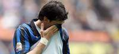
El Inter no logró pasar del empate ante el Atalanta, en un nuevo golpe para los hombres de Claudio Ranieri tras su eliminación en octavos de final de la Liga de Campeones por el Marsella el pasado martes.
En una temporada marcada por los altibajos, los 'nerazzurri', octavos en la clasificación, necesitaban una victoria para escalar en la tabla y poder mantener las esperanzas sobre la posibilidad de jugar la 'Champions' la próxima temporada.
Sin embargo, el resultado ante el Atalanta aumenta las dudas, ya expresadas por el presiente de la entidad, Massimo Moratti, de que el equipo pueda alcanzar el tercer puesto que les daría la opción de estar en la máxima competición por clubes europea. Los 'nerazzurri' evidenciaron problemas para estar a la altura de las expectativas, y aunque no les faltaron ni las ganas ni las ocasiones para cerrar el encuentro a su favor, no lograron transformar sus oportunidades.
Entre las más claras, estuvo la del argentino Diego Milito, que en el minuto 24 falló un penalti por una falta de Bellini sobre Pazzini, tras un saque de córner del brasileño Maicon para el conjunto milanés. 'El Príncipe' pareció querer engañar al portero desde los 11 metros con un tiro a ras de suelo, aunque no lo consiguió ya que el meta del Atalanta logró despejarlo sin problemas. Milito encadenó así dos penaltis sin transformar en dos partidos consecutivos, tras el que falló ante el Chievo Verona en la anterior jornada.
2012-03-18T16:05:06Z
El Villarreal destituye a Molina tras perder con el Levante
El Villarreal destituye a Molina tras perder con el Levante
EFE
Segundo entrenador destituido por el club en la presente temporada.
Molina tan solo ha dirigido al conjunto castellonense en once partidos de Liga.
El Villarreal es decimoséptimo en la clasificación con 27 puntos.
El Villarreal ha comunicado la destitución de su técnico José Francisco Molina tras la derrota sufrida esta mañana ante el Levante (1-0) en Valencia y que suponía la quinta jornada sin ganar del equipo castellonense. Molina se convierte así en el segundo entrenador destituido en el Villarreal en la presente temporada, ya que el ex-guardameta se hizo con la riendas del equipo castellonense en sustitución de Juan Carlos Garrido a finales de diciembre, tras la eliminación en la Copa del Rey frente al Mirandés de Segunda División B.José Molina, que accedió al primer equipo procedente del Villarreal B de Segunda División, logró en el primer mes al frente del equipo una reacción con la que los villarrelenses salieron de la zona de descenso a Segunda División, pero una racha de cinco partidos sin ganar ha desencadenado su destitución.El despido de Molina se ha producido apenas dos horas después de que el Villarreal perdiese por la mínima en el tiempo añadido del partido que ha enfrentado a los castellonenses con el Levante, en el estadio Ciutat de València. Molina, de 41 años, ha dirigido al Villarreal en once partidos de Liga, en los que presentaba un balance de tres victorias, tres empates y cinco derrotas, si bien el último triunfo conseguido fue el pasado 12 de febrero, cuando el Villarreal superó al Granada por 3-1. Además, cuatro de sus cinco derrotas se han producido en las últimas cinco jornadas ligueras, en las que solo ha podido lograr uno de los quince puntos en juego, tras empatar con el Athletic Club y perder con el Real Mallorca, Real Zaragoza, Getafe y Levante. Tras el partido de hoy, el Villarreal es decimoséptimo en la clasificación con 27 puntos, que lo sitúan a tres puntos del descenso, si bien debe esperar al resultado del partido de mañana lunes del Racing de Santander ante el Espanyol, ya que los santanderinos son decimoctavos, con 24. El Villarreal todavía no ha informado de quien será el entrenador que ocupará el banquillo en el partido que el próximo miércoles, en el partido en el que se enfrentará al Real Madrid en el estadio de El Madrigal.
EFE
- Segundo entrenador destituido por el club en la presente temporada.
- Molina tan solo ha dirigido al conjunto castellonense en once partidos de Liga.
- El Villarreal es decimoséptimo en la clasificación con 27 puntos.
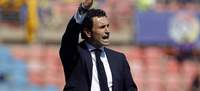
El Villarreal ha comunicado la destitución de su técnico José Francisco Molina tras la derrota sufrida esta mañana ante el Levante (1-0) en Valencia y que suponía la quinta jornada sin ganar del equipo castellonense.
Molina se convierte así en el segundo entrenador destituido en el Villarreal en la presente temporada, ya que el ex-guardameta se hizo con la riendas del equipo castellonense en sustitución de Juan Carlos Garrido a finales de diciembre, tras la eliminación en la Copa del Rey frente al Mirandés de Segunda División B.
José Molina, que accedió al primer equipo procedente del Villarreal B de Segunda División, logró en el primer mes al frente del equipo una reacción con la que los villarrelenses salieron de la zona de descenso a Segunda División, pero una racha de cinco partidos sin ganar ha desencadenado su destitución.
El despido de Molina se ha producido apenas dos horas después de que el Villarreal perdiese por la mínima en el tiempo añadido del partido que ha enfrentado a los castellonenses con el Levante, en el estadio Ciutat de València.
Molina, de 41 años, ha dirigido al Villarreal en once partidos de Liga, en los que presentaba un balance de tres victorias, tres empates y cinco derrotas, si bien el último triunfo conseguido fue el pasado 12 de febrero, cuando el Villarreal superó al Granada por 3-1.
Además, cuatro de sus cinco derrotas se han producido en las últimas cinco jornadas ligueras, en las que solo ha podido lograr uno de los quince puntos en juego, tras empatar con el Athletic Club y perder con el Real Mallorca, Real Zaragoza, Getafe y Levante.
Tras el partido de hoy, el Villarreal es decimoséptimo en la clasificación con 27 puntos, que lo sitúan a tres puntos del descenso, si bien debe esperar al resultado del partido de mañana lunes del Racing de Santander ante el Espanyol, ya que los santanderinos son decimoctavos, con 24.
El Villarreal todavía no ha informado de quien será el entrenador que ocupará el banquillo en el partido que el próximo miércoles, en el partido en el que se enfrentará al Real Madrid en el estadio de El Madrigal.
2012-03-19T21:38:39Z
Diez detenidos por estar presuntamente implicados en una red de tráfico de dopantes
Diez detenidos por estar presuntamente implicados en una red de tráfico de dopantes
EFE
Seis de las detenciones se han producido en Cataluña y cuatro en Madrid.
En el equipaje del doctor colombiano Alberto B. N. se intervinieron sustancias dopantes "de última generación" como AICAR y TB-500.
El grupo ahora desarticulado tenía una perfecta organización funcional y jerárquica, con una red de captación de deportistas
Una operación conjunta de la Policía Nacional y los Mossos d'Esquadra se ha saldado con la detención de 10 personas presuntamente implicadas en una red internacional dedicada al tráfico de sustancias dopantes, según han informado ambos cuerpos de seguridad.Según recoge un comunicado de los Mossos, seis de las detenciones se han producido en Cataluña y cuatro en Madrid, entre las que destaca la del presunto jefe de la organización, el doctor de origen colombiano Alberto B.N., que ya ha ingresado en prisión.La detención del doctor tuvo lugar el pasado 5 de marzo en el aeropuerto de Barajas, cuando se disponía a coger un avión hacia Colombia, y en su equipaje se intervinieron sustancias dopantes "de última generación" como AICAR y TB-500. Además de estas, a otros miembros de la organización también se les ha intervenido EPO CERA, EPO, hormonas del crecimiento y anabolizantes.Aunque la policía catalana considera que esta infraestructura criminal ha sido "desarticulada", también asegura que "no se descarta una segunda fase de actuación con nuevos detenidos".Según los Mossos, la organización desmantelada tuvo "implicación directa" en los resultados positivos en controles antidopaje de deportistas de elite que habían competido en varios campeonatos de primera línea durante los últimos años, como son los Juegos Olímpicos de Pekín de 2008, la Vuelta Ciclista a Portugal de 2009, la Vuelta Ciclista a España de 2010 y los campeonatos de España de Atletismo de 2010.Contactos con el deporte de éliteLa investigación policial se remonta al verano de 2011, cuando ambos cuerpos de policía investigaban de forma paralela "dos posibles casos de tráfico de sustancias dopantes de tercera generación" en Mataró (Barcelona) y Madrid. Los dos cuerpos de policía detectaron que el presunto jefe de la organización que investigaban era la misma persona, el doctor detenido en Madrid, que disponía "de muchos contactos en el mundo del deporte de elite".La investigación en Mataró (Barcelona) se centraba en una tienda dedicada "a la venta de complementos nutricionales para deportistas" y que presuntamente "estaba relacionada con el positivo de EPO de un atleta catalán en el Campeonato de España de Atletismo de 2010".Este comercio recibía "pedidos sospechosos procedentes de Marruecos" en los que el producto demandado era EPO CERA y los demandantes, dos ciudadanos marroquíes que también estaban siendo investigados desde Madrid por la Policía Nacional por suministrar esta sustancia "a ciclistas profesionales".Según la Policía Nacional, el grupo ahora desarticulado tenía una perfecta organización funcional y jerárquica, con una red de captación de deportistas, dedicada a ejercer labores de asesoramiento, distribución y prescripción, y otra dedicada a obtención de las sustancias en distintos orígenes, siempre fuera de los canales legales.
EFE
- Seis de las detenciones se han producido en Cataluña y cuatro en Madrid.
- En el equipaje del doctor colombiano Alberto B. N. se intervinieron sustancias dopantes "de última generación" como AICAR y TB-500.
- El grupo ahora desarticulado tenía una perfecta organización funcional y jerárquica, con una red de captación de deportistas

Una operación conjunta de la Policía Nacional y los Mossos d'Esquadra se ha saldado con la detención de 10 personas presuntamente implicadas en una red internacional dedicada al tráfico de sustancias dopantes, según han informado ambos cuerpos de seguridad.
Según recoge un comunicado de los Mossos, seis de las detenciones se han producido en Cataluña y cuatro en Madrid, entre las que destaca la del presunto jefe de la organización, el doctor de origen colombiano Alberto B.N., que ya ha ingresado en prisión.
La detención del doctor tuvo lugar el pasado 5 de marzo en el aeropuerto de Barajas, cuando se disponía a coger un avión hacia Colombia, y en su equipaje se intervinieron sustancias dopantes "de última generación" como AICAR y TB-500. Además de estas, a otros miembros de la organización también se les ha intervenido EPO CERA, EPO, hormonas del crecimiento y anabolizantes.
Aunque la policía catalana considera que esta infraestructura criminal ha sido "desarticulada", también asegura que "no se descarta una segunda fase de actuación con nuevos detenidos".
Según los Mossos, la organización desmantelada tuvo "implicación directa" en los resultados positivos en controles antidopaje de deportistas de elite que habían competido en varios campeonatos de primera línea durante los últimos años, como son los Juegos Olímpicos de Pekín de 2008, la Vuelta Ciclista a Portugal de 2009, la Vuelta Ciclista a España de 2010 y los campeonatos de España de Atletismo de 2010.
Contactos con el deporte de élite
La investigación policial se remonta al verano de 2011, cuando ambos cuerpos de policía investigaban de forma paralela "dos posibles casos de tráfico de sustancias dopantes de tercera generación" en Mataró (Barcelona) y Madrid. Los dos cuerpos de policía detectaron que el presunto jefe de la organización que investigaban era la misma persona, el doctor detenido en Madrid, que disponía "de muchos contactos en el mundo del deporte de elite".
La investigación en Mataró (Barcelona) se centraba en una tienda dedicada "a la venta de complementos nutricionales para deportistas" y que presuntamente "estaba relacionada con el positivo de EPO de un atleta catalán en el Campeonato de España de Atletismo de 2010".
Este comercio recibía "pedidos sospechosos procedentes de Marruecos" en los que el producto demandado era EPO CERA y los demandantes, dos ciudadanos marroquíes que también estaban siendo investigados desde Madrid por la Policía Nacional por suministrar esta sustancia "a ciclistas profesionales".
Según la Policía Nacional, el grupo ahora desarticulado tenía una perfecta organización funcional y jerárquica, con una red de captación de deportistas, dedicada a ejercer labores de asesoramiento, distribución y prescripción, y otra dedicada a obtención de las sustancias en distintos orígenes, siempre fuera de los canales legales.
2012-03-19T20:53:14Z
Guardiola: "La Liga es imposible, no ha cambiado mi opinión"
Guardiola: "La Liga es imposible, no ha cambiado mi opinión"
EP
"Muchos dan por hecho los perderán y olvidan que tenemos que ganarlos nosotros. Sigo pensando que costará y que no lo haremos", dice el técnico.
Matizó que "poca credibilidad" tendría si cambiara de opinión en tres días
Guardiola afirmó sin embargo que no puedo negar "que es mejor estar a 8 puntos que a 10, y a 10 puntos mejor que 13".
El entrenador del FC Barcelona, Pep Guardiola, ha refrendado este lunes, pese al pinchazo del Real Madrid ante el Málaga, que revalidar el título de Liga BBVA sigue siendo "imposible" para los blaugranas, ahora a ocho puntos, si bien ha asegurado que no permitirá a sus jugadores bajar los brazos pues deben intentar ganar para estar a tono en la 'Champions'."Muchos dan por hecho los perderán y olvidan que tenemos que ganarlos nosotros. Tenemos que seguir mirándonos, lo que hemos hecho y de manera excelente. Sigo pensando que costará y que no lo haremos. Es imposible, no ha cambiado mi opinión en dos días", manifestó en rueda de prensa.En este sentido, matizó que "poca credibilidad" tendría si cambiara de opinión en tres días, y destacó los peligros y virtudes del Madrid para defender su teoría. "Competimos contra un rival que ha perdido dos partidos de 27, que tiene muchas virtudes, y tiene que perder muchos partidos todavía e imagino que será muy difícil que pase", señaló.Eso sí, si el aficionado y socio culé le pide y muestra que es posible ganar, no les quitará esa ilusión aunque arrancan desde "muy atrás" en la lucha por la Liga. "Tenemos que hacer casi todos los puntos, nos iríamos a 96, y los once partidos que nos quedan son muy duros, porque todos se juegan muchas cosas; descenso, Europa League... Hay derbis, el Bilbao en casa... Es lo que tenemos que mirar", aseveró."Es muy difícil ganar los once partidos que quedan, es una lucha titánica. Son complicados y sumamos 'Champions'. El Madrid ha ganado doce seguidos, puede volver a hacerlo. Desengañémonos, el Madrid tiene jugadores de mucho peso, como su historia, y será muy complicado que se dejen puntos. A mis jugadores les exijo más porque es una manera de demostrar que pese a todo todavía estamos ahí", se sinceró.Al respecto, ahondó en la idea de que el reto, el camino, es el más duro posible. "Es el reto más titánico que puede haber en fútbol, remontar ocho puntos al Madrid. Que lo sigan pensando (los jugadores), me parece bien. Quizá porque tengo la medalla del Parlament y soy catalán soy más pesimista", ironizó.Y es que para Guardiola es importante que los suyos no piensan en la remontada sino en hacer las cosas bien, y ganar, cada partido. "Al final gana uno, Real Madrid o Barcelona, y ellos tienen mucha más ventaja. El objetivo no es pensar en la remontada, otra cosa sería estar a 4-5 antes de que vinieran al Camp Nou. A esta distancia el pensamiento no es la remontada. Todo el mundo da por hecho que ganaremos en el Camp Nou, y es una tarea de verdad", recordó."Las semanas serán muy largas e insoportables si no ganamos para decir que al menos hemos hecho el trabajo. Es lo que han hecho y seguirán haciéndolo", añadió.El técnico, que aseguró que no se sentiría "culpable" por enviar un mensaje de que la Liga está imposible a no ser que los jugadores dejaran de correr, y lo intentará evitar, tuvo tiempo para destacar el peligro de un Granada que es la primera piedra en el camino tan particular que se ha marcado."Es fresco, dinámico, especula poco y juega muy bien al fútbol. No puedo negar que es mejor estar a 8 que a 10, y 10 mejor que 13, pero la única realidad es que tenemos que volver a competir y alargar los minutos de Sevilla que fueron excelentes, porque pronto vamos a jugar a Europa y 30 minutos no son suficientes. Nos entrenamos para esto, también", apostilló.
EP
- "Muchos dan por hecho los perderán y olvidan que tenemos que ganarlos nosotros. Sigo pensando que costará y que no lo haremos", dice el técnico.
- Matizó que "poca credibilidad" tendría si cambiara de opinión en tres días
- Guardiola afirmó sin embargo que no puedo negar "que es mejor estar a 8 puntos que a 10, y a 10 puntos mejor que 13".
El entrenador del FC Barcelona, Pep Guardiola, ha refrendado este lunes, pese al pinchazo del Real Madrid ante el Málaga, que revalidar el título de Liga BBVA sigue siendo "imposible" para los blaugranas, ahora a ocho puntos, si bien ha asegurado que no permitirá a sus jugadores bajar los brazos pues deben intentar ganar para estar a tono en la 'Champions'.
"Muchos dan por hecho los perderán y olvidan que tenemos que ganarlos nosotros. Tenemos que seguir mirándonos, lo que hemos hecho y de manera excelente. Sigo pensando que costará y que no lo haremos. Es imposible, no ha cambiado mi opinión en dos días", manifestó en rueda de prensa.
En este sentido, matizó que "poca credibilidad" tendría si cambiara de opinión en tres días, y destacó los peligros y virtudes del Madrid para defender su teoría. "Competimos contra un rival que ha perdido dos partidos de 27, que tiene muchas virtudes, y tiene que perder muchos partidos todavía e imagino que será muy difícil que pase", señaló.
Eso sí, si el aficionado y socio culé le pide y muestra que es posible ganar, no les quitará esa ilusión aunque arrancan desde "muy atrás" en la lucha por la Liga. "Tenemos que hacer casi todos los puntos, nos iríamos a 96, y los once partidos que nos quedan son muy duros, porque todos se juegan muchas cosas; descenso, Europa League... Hay derbis, el Bilbao en casa... Es lo que tenemos que mirar", aseveró.
"Es muy difícil ganar los once partidos que quedan, es una lucha titánica. Son complicados y sumamos 'Champions'. El Madrid ha ganado doce seguidos, puede volver a hacerlo. Desengañémonos, el Madrid tiene jugadores de mucho peso, como su historia, y será muy complicado que se dejen puntos. A mis jugadores les exijo más porque es una manera de demostrar que pese a todo todavía estamos ahí", se sinceró.
Al respecto, ahondó en la idea de que el reto, el camino, es el más duro posible. "Es el reto más titánico que puede haber en fútbol, remontar ocho puntos al Madrid. Que lo sigan pensando (los jugadores), me parece bien. Quizá porque tengo la medalla del Parlament y soy catalán soy más pesimista", ironizó.
Y es que para Guardiola es importante que los suyos no piensan en la remontada sino en hacer las cosas bien, y ganar, cada partido. "Al final gana uno, Real Madrid o Barcelona, y ellos tienen mucha más ventaja. El objetivo no es pensar en la remontada, otra cosa sería estar a 4-5 antes de que vinieran al Camp Nou. A esta distancia el pensamiento no es la remontada. Todo el mundo da por hecho que ganaremos en el Camp Nou, y es una tarea de verdad", recordó.
"Las semanas serán muy largas e insoportables si no ganamos para decir que al menos hemos hecho el trabajo. Es lo que han hecho y seguirán haciéndolo", añadió.
El técnico, que aseguró que no se sentiría "culpable" por enviar un mensaje de que la Liga está imposible a no ser que los jugadores dejaran de correr, y lo intentará evitar, tuvo tiempo para destacar el peligro de un Granada que es la primera piedra en el camino tan particular que se ha marcado.
"Es fresco, dinámico, especula poco y juega muy bien al fútbol. No puedo negar que es mejor estar a 8 que a 10, y 10 mejor que 13, pero la única realidad es que tenemos que volver a competir y alargar los minutos de Sevilla que fueron excelentes, porque pronto vamos a jugar a Europa y 30 minutos no son suficientes. Nos entrenamos para esto, también", apostilló.
2012-03-19T19:16:38Z
El expresidente de la FIFA Joao Havelange está hospitalizado en Río de Janeiro en estado grave
El expresidente de la FIFA Joao Havelange está hospitalizado en Río de Janeiro en estado grave
EFE
El dirigente deportivo brasileño, de 95 años, fue hospitalizado con un estado "infeccioso grave" y está siendo tratado con antibióticos por vía venosa.
Por ahora no hay previsión de alta para Havelange.
Es hasta ahora el único presidente no europeo de la FIFA.
El expresidente de la Federación Internacional de Asociaciones de Fútbol (FIFA), Joao Havelange, fue ingresado el domingo en un hospital de Río de Janeiro por una infección y su estado de salud "es grave e inspira cuidados", han informado fuentes médicas.El dirigente deportivo brasileño, de 95 años, fue hospitalizado anoche en la unidad de cuidados coronarios del Hospital Samaritano con un estado "infeccioso grave" y está siendo tratado con antibióticos por vía venosa, según un boletín divulgado por el centro médico.El médico de Havelange, el cardiólogo Joao Mansur Filho, dijo tras visitarlo este lunes que su "estado clínico es grave e inspira cuidados", agrega la nota. De acuerdo con el hospital, por ahora no hay previsión de alta para Havelange, que comandó el fútbol mundial durante 24 años hasta 1998.El aún presidente de honor de la FIFA ya había sido hospitalizado en mayo de 2010 igualmente por una infección y en 2006 fue intervenido a una operación en la que le fue implantado un marcapasos.En diciembre pasado, el dirigente alegó motivos de salud para justificar su renuncia como miembro directivo del Comité Olímpico Internacional (COI).Havelange comenzó su carrera como dirigente deportivo en 1956 como presidente de la Confederación Brasileña de Deportes, cargo que abandonó en 1974 para asumir la presidencia de la FIFA luego de que Brasil conquistara tres títulos mundiales de fútbol (Suecia 1958, Chile 1962 y México 1970).El brasileño, hasta ahora el único presidente no europeo de la FIFA, fue nadador y jugador de waterpolo olímpico antes de iniciar su carrera como dirigente deportivo.
EFE
- El dirigente deportivo brasileño, de 95 años, fue hospitalizado con un estado "infeccioso grave" y está siendo tratado con antibióticos por vía venosa.
- Por ahora no hay previsión de alta para Havelange.
- Es hasta ahora el único presidente no europeo de la FIFA.
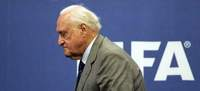
El expresidente de la Federación Internacional de Asociaciones de Fútbol (FIFA), Joao Havelange, fue ingresado el domingo en un hospital de Río de Janeiro por una infección y su estado de salud "es grave e inspira cuidados", han informado fuentes médicas.
El dirigente deportivo brasileño, de 95 años, fue hospitalizado anoche en la unidad de cuidados coronarios del Hospital Samaritano con un estado "infeccioso grave" y está siendo tratado con antibióticos por vía venosa, según un boletín divulgado por el centro médico.
El médico de Havelange, el cardiólogo Joao Mansur Filho, dijo tras visitarlo este lunes que su "estado clínico es grave e inspira cuidados", agrega la nota. De acuerdo con el hospital, por ahora no hay previsión de alta para Havelange, que comandó el fútbol mundial durante 24 años hasta 1998.
El aún presidente de honor de la FIFA ya había sido hospitalizado en mayo de 2010 igualmente por una infección y en 2006 fue intervenido a una operación en la que le fue implantado un marcapasos.
En diciembre pasado, el dirigente alegó motivos de salud para justificar su renuncia como miembro directivo del Comité Olímpico Internacional (COI).
Havelange comenzó su carrera como dirigente deportivo en 1956 como presidente de la Confederación Brasileña de Deportes, cargo que abandonó en 1974 para asumir la presidencia de la FIFA luego de que Brasil conquistara tres títulos mundiales de fútbol (Suecia 1958, Chile 1962 y México 1970).
El brasileño, hasta ahora el único presidente no europeo de la FIFA, fue nadador y jugador de waterpolo olímpico antes de iniciar su carrera como dirigente deportivo.
2012-03-19T10:56:04Z
Lotina entrenará al Villarreal hasta el final de temporada tras la destitución de Molina
Lotina entrenará al Villarreal hasta el final de temporada tras la destitución de Molina
EFE / VÍDEO: ATLAS
Lotina releva en el cargo a José Francisco Molina tras la derrota sufrida este domingo ante el Levante (1-0) en Valencia.
Es ya el tercer técnico que ocupa el banquillo del Villarreal en esta temporada.
El equipo castellonense encadena cinco jornadas sin ganar y está a tres puntos del descenso a Segunda División.
El Villarreal CF ha llegado a un acuerdo con Miguel Ángel Lotina para que se haga cargo del primer equipo hasta final de temporada, según ha informado este lunes el club castellonense. El técnico vizcaíno comienza a entrenar desde este mismo lunes por la mañana a su nuevo equipo en la ciudad deportiva del Villarreal tras ser presentado oficialmente a los medios de comunicación.Lotina releva en el cargo a José Francisco Molina tras la derrota sufrida este domingo ante el Levante (1-0) en Valencia, donde el equipo castellonense encadenó cinco jornadas sin ganar y se encuentra a tres puntos del descenso a Segunda División.El entrenador vasco es el tercer técnico que ocupa el banquillo del Villarreal en la presente temporada, ya que Juan Carlos Garrido empezó la campaña pero a finales del pasado mes de diciembre fue reemplazado por Molina tras la eliminación sufrida en la Copa del Rey ante el Mirandés de Segunda División B.Desde el Villarreal se destaca que Lotina es un entrenador contrastado y experimentado, con más de veinte años en los banquillos, según se indica en un comunicado oficial en su página web.Entre los méritos deportivos de Lotina, destacan la Copa del Rey con el Espanyol (2006), la Copa Intertoto con el Deportivo de La Coruña (2008), la clasificación con el Celta de Vigo a la Liga de Campeones y los ascensos a Primera División con el Numancia y Osasuna.
EFE / VÍDEO: ATLAS
- Lotina releva en el cargo a José Francisco Molina tras la derrota sufrida este domingo ante el Levante (1-0) en Valencia.
- Es ya el tercer técnico que ocupa el banquillo del Villarreal en esta temporada.
- El equipo castellonense encadena cinco jornadas sin ganar y está a tres puntos del descenso a Segunda División.
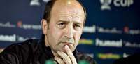
El Villarreal CF ha llegado a un acuerdo con Miguel Ángel Lotina para que se haga cargo del primer equipo hasta final de temporada, según ha informado este lunes el club castellonense.
El técnico vizcaíno comienza a entrenar desde este mismo lunes por la mañana a su nuevo equipo en la ciudad deportiva del Villarreal tras ser presentado oficialmente a los medios de comunicación.
Lotina releva en el cargo a José Francisco Molina tras la derrota sufrida este domingo ante el Levante (1-0) en Valencia, donde el equipo castellonense encadenó cinco jornadas sin ganar y se encuentra a tres puntos del descenso a Segunda División.
El entrenador vasco es el tercer técnico que ocupa el banquillo del Villarreal en la presente temporada, ya que Juan Carlos Garrido empezó la campaña pero a finales del pasado mes de diciembre fue reemplazado por Molina tras la eliminación sufrida en la Copa del Rey ante el Mirandés de Segunda División B.
Desde el Villarreal se destaca que Lotina es un entrenador contrastado y experimentado, con más de veinte años en los banquillos, según se indica en un comunicado oficial en su página web.
Entre los méritos deportivos de Lotina, destacan la Copa del Rey con el Espanyol (2006), la Copa Intertoto con el Deportivo de La Coruña (2008), la clasificación con el Celta de Vigo a la Liga de Campeones y los ascensos a Primera División con el Numancia y Osasuna.
2012-03-18T22:47:33Z
El Real Madrid tropieza con el Málaga y la Liga se aprieta
El Real Madrid tropieza con el Málaga y la Liga se aprieta
EFE
Santi Cazorla empató el partido en el descuento de falta directa (1-1).
Antes, Benzema había adelantado al Madrid, que perdonó demasiado.
El Barça, que ganó en Sevilla, se coloca ahora a 8 puntos de los blancos.
Estadísticas del partido | Clasificación de la Liga.
Un golazo de falta de Santi Cazorla cuando un duelo igualado se cerraba con triunfo de un líder al que le flojeaban las fuerzas, premió el buen fútbol del Málaga (1-1), cortó la racha de once victorias consecutivas del Real Madrid y devuelve el pulso a la lucha por el título con el Barcelona a ocho puntos. Mientras Pep Guardiola insiste desde Barcelona que la Liga está perdida, el Malaga de Manuel Pellegrini sorprendió al Real Madrid en el estadio Santiago Bernabéu. En momentos en los que el caminar madridista hacia el título liguero era firme. Cuando desbordaba confianza, sufre un bajón físico. Ante el CSKA hubo señales que se confirmaron con el Málaga. Superado, se agarró a la calidad individual de los jugadores de ataque como salvación hasta que apareció Cazorla.Pellegrini supo quitar brillantez al fútbol madridista en una nueva vuelta al que fue su estadio. Esta vez no pasó desapercibido. Pocos le agradecen el trabajo que dejó a José Mourinho porque no ganó títulos, pero muestra sus conocimientos con planteamientos como el que plasmó en el Bernabéu. Desdibujó a Khedira, tapó a Xabi Alonso y no hubo continuidad en el juego blanco. El músculo de Demichelis como mediocentro y Camacho fue suficiente. La magia la ponía un trío que hace soñar al Málaga con jugar la Liga de Campeones. Isco, Cazorla y Joaquín. Con el andaluz rememorando sus mejores tiempos en minutos de regates en los que enloqueció a Kaká. Había pedido Mourinho a su afición más empatía con sus jugadores. No ovacionar tanto al que para, Casillas, y al que marca, Cristiano, y tener guiños con los que fallan. Son mensajes que caen en vacío. La idiosincrasia de la afición del Bernabéu nadie la cambiará. Desacertado Kaká, tiró por tierra dos contras y sus seguidores no se lo perdonaron. Volvieron a sonar los silbidos que no entiende el técnico portugués. A base de goles se ha ganado Cristiano Ronaldo que se coree su nombre. Con una transformación brutal se gana ovaciones Karim Benzema. Fueron los únicos a los que no afectó el bajón blanco. El francés remataba con un toque sutil al inicio a las manos de Caballero, que con una rápida salida también evitaba el tanto del portugués. Eran momentos en los que el Málaga imponía su fútbol. Demichelis se adueñaba de la medular, Cazorla e Isco conectaban y Joaquín desbordaba. El remate lo puso Rondón y la parada Casillas. Pegada al palo para sacar un tiro cruzado del venezolano. En el Bernabéu no se puede perdonar. Isco lo hizo. Entró con tiempo para pensar el remate y lo cruzó en exceso. El Real Madrid pasaba a depender de individualidades. Las tienes y demostraron que están entre las mejores del mundo. Benzema inventó una jugada que concluyó con un disparo ajustado al palo. Cristiano sacó un pase medido de la nada desde el costado izquierdo a la cabeza de Karim Benzema. A placer, no perdonó. Fue un duro golpe al fútbol del Málaga. Tenía la segunda mitad para levantarse cuando el Real Madrid le entregó el balón para hacerle daño al contraataque. Se parapetó bien el equipo de José Mourinho y Casillas no sufrió hasta una falta que entró por su palo pegada a la escuadra.El Madrid perdona, el Málaga sorprendeSin orden buscó sentenciar el partido el Real Madrid. Son momentos en los que añora el desborde de Ángel Di María. Su poder ofensivo le hizo generar ocasiones. Bastan destellos de Özil para que Cristiano Ronaldo la tenga, pero se tope con una magnífica intervención de Caballero a su disparo ajustado y vea cortada su racha de siete partidos consecutivos marcando. Perdonó Benzema, que primero dudó en una contra entre asistir a Cristiano o chutar y lanzó fuera un jugadón de Özil que nadie pudo frenar. El partido estaba roto y Pellegrini movió su banquillo sabiendo que podía hacer daño por las bandas. Eliseu cogía la espalda de Lass y Seba desbordó ante Marcelo. Pero van Nistelrooy, ovacionado por la que fue su afición, no encontró el remate. Cuando parecía que el líder sufría para ganar un nuevo partido, apareció sobre la hora Cazorla para poner el broche a un gran partido en el que pudo ser su estadio. Una de esas faltas que ensaya en los entrenamientos de la selección con Casillas, se la coló por la escuadra para mantener en puestos 'Champions' al Málaga y devolver el pulso a la Liga.- Ficha técnica:1 - Real Madrid: Casillas; 'Lass', Pepe, Sergio Ramos, Marcelo; Khedira, Xabi Alonso, Özil (Granero, m.85); Kaká (Callejón, m.67), Cristiano Ronaldo y Benzema (Benzema, m.86). 1 - Málaga CF: Caballero; Sergio Sánchez, Mathijsen, Weligton, Monreal; Joaquín (Seba Fernández, m.73 ), Demichelis, Camacho, Isco (Van Nistelrooy, m.57), Cazorla; y Rondón (Eliseu, m.57). Goles: 1-0, m.35: Benzema. 1-1, m.90: Cazorla. Árbitro: Ayza Gámez (colegio valenciano). Amonestó a Khedira (63) y Pepe (87) por el Real Madrid, y a Sergio Sánchez (53) por el Málaga. Incidencias: encuentro correspondiente a la vigésimo octava jornada de Primera División, disputado en el estadio Santiago Bernabéu ante la presencia de 75.000 espectadores.
EFE
- Santi Cazorla empató el partido en el descuento de falta directa (1-1).
- Antes, Benzema había adelantado al Madrid, que perdonó demasiado.
- El Barça, que ganó en Sevilla, se coloca ahora a 8 puntos de los blancos.
- Estadísticas del partido | Clasificación de la Liga.
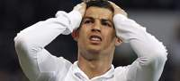
Un golazo de falta de Santi Cazorla cuando un duelo igualado se cerraba con triunfo de un líder al que le flojeaban las fuerzas, premió el buen fútbol del Málaga (1-1), cortó la racha de once victorias consecutivas del Real Madrid y devuelve el pulso a la lucha por el título con el Barcelona a ocho puntos.
Mientras Pep Guardiola insiste desde Barcelona que la Liga está perdida, el Malaga de Manuel Pellegrini sorprendió al Real Madrid en el estadio Santiago Bernabéu. En momentos en los que el caminar madridista hacia el título liguero era firme. Cuando desbordaba confianza, sufre un bajón físico. Ante el CSKA hubo señales que se confirmaron con el Málaga. Superado, se agarró a la calidad individual de los jugadores de ataque como salvación hasta que apareció Cazorla.
Pellegrini supo quitar brillantez al fútbol madridista en una nueva vuelta al que fue su estadio. Esta vez no pasó desapercibido. Pocos le agradecen el trabajo que dejó a José Mourinho porque no ganó títulos, pero muestra sus conocimientos con planteamientos como el que plasmó en el Bernabéu. Desdibujó a Khedira, tapó a Xabi Alonso y no hubo continuidad en el juego blanco.
El músculo de Demichelis como mediocentro y Camacho fue suficiente. La magia la ponía un trío que hace soñar al Málaga con jugar la Liga de Campeones. Isco, Cazorla y Joaquín. Con el andaluz rememorando sus mejores tiempos en minutos de regates en los que enloqueció a Kaká.
Había pedido Mourinho a su afición más empatía con sus jugadores. No ovacionar tanto al que para, Casillas, y al que marca, Cristiano, y tener guiños con los que fallan. Son mensajes que caen en vacío. La idiosincrasia de la afición del Bernabéu nadie la cambiará. Desacertado Kaká, tiró por tierra dos contras y sus seguidores no se lo perdonaron. Volvieron a sonar los silbidos que no entiende el técnico portugués.
A base de goles se ha ganado Cristiano Ronaldo que se coree su nombre. Con una transformación brutal se gana ovaciones Karim Benzema. Fueron los únicos a los que no afectó el bajón blanco. El francés remataba con un toque sutil al inicio a las manos de Caballero, que con una rápida salida también evitaba el tanto del portugués.
Eran momentos en los que el Málaga imponía su fútbol. Demichelis se adueñaba de la medular, Cazorla e Isco conectaban y Joaquín desbordaba. El remate lo puso Rondón y la parada Casillas. Pegada al palo para sacar un tiro cruzado del venezolano.
En el Bernabéu no se puede perdonar. Isco lo hizo. Entró con tiempo para pensar el remate y lo cruzó en exceso. El Real Madrid pasaba a depender de individualidades. Las tienes y demostraron que están entre las mejores del mundo. Benzema inventó una jugada que concluyó con un disparo ajustado al palo. Cristiano sacó un pase medido de la nada desde el costado izquierdo a la cabeza de Karim Benzema. A placer, no perdonó.
Fue un duro golpe al fútbol del Málaga. Tenía la segunda mitad para levantarse cuando el Real Madrid le entregó el balón para hacerle daño al contraataque. Se parapetó bien el equipo de José Mourinho y Casillas no sufrió hasta una falta que entró por su palo pegada a la escuadra.
El Madrid perdona, el Málaga sorprende
Sin orden buscó sentenciar el partido el Real Madrid. Son momentos en los que añora el desborde de Ángel Di María. Su poder ofensivo le hizo generar ocasiones. Bastan destellos de Özil para que Cristiano Ronaldo la tenga, pero se tope con una magnífica intervención de Caballero a su disparo ajustado y vea cortada su racha de siete partidos consecutivos marcando.
Perdonó Benzema, que primero dudó en una contra entre asistir a Cristiano o chutar y lanzó fuera un jugadón de Özil que nadie pudo frenar. El partido estaba roto y Pellegrini movió su banquillo sabiendo que podía hacer daño por las bandas. Eliseu cogía la espalda de Lass y Seba desbordó ante Marcelo. Pero van Nistelrooy, ovacionado por la que fue su afición, no encontró el remate.
Cuando parecía que el líder sufría para ganar un nuevo partido, apareció sobre la hora Cazorla para poner el broche a un gran partido en el que pudo ser su estadio. Una de esas faltas que ensaya en los entrenamientos de la selección con Casillas, se la coló por la escuadra para mantener en puestos 'Champions' al Málaga y devolver el pulso a la Liga.
- Ficha técnica:
1 - Real Madrid: Casillas; 'Lass', Pepe, Sergio Ramos, Marcelo; Khedira, Xabi Alonso, Özil (Granero, m.85); Kaká (Callejón, m.67), Cristiano Ronaldo y Benzema (Benzema, m.86).
1 - Málaga CF: Caballero; Sergio Sánchez, Mathijsen, Weligton, Monreal; Joaquín (Seba Fernández, m.73 ), Demichelis, Camacho, Isco (Van Nistelrooy, m.57), Cazorla; y Rondón (Eliseu, m.57).
Goles: 1-0, m.35: Benzema. 1-1, m.90: Cazorla.
Árbitro: Ayza Gámez (colegio valenciano). Amonestó a Khedira (63) y Pepe (87) por el Real Madrid, y a Sergio Sánchez (53) por el Málaga.
Incidencias: encuentro correspondiente a la vigésimo octava jornada de Primera División, disputado en el estadio Santiago Bernabéu ante la presencia de 75.000 espectadores.
2012-03-18T22:14:56Z
Caja 3 acaricia la final e igualdad entre CMA Soria y Unicaja en los playoffs de la Superliga
Caja 3 acaricia la final e igualdad entre CMA Soria y Unicaja en los playoffs de la Superliga
RFEVB
Ciudad Medio Ambiente Soria igualó la eliminatoria que le enfrenta a Unicaja.
Caja 3 Voleibol Teruel logró la victoria en el segundo encuentro ante Cajasol.
Las semifinales de la Superliga Masculina vivieron su segundo acto en una tarde de domingo que deparó dos claros triunfos locales. En Teruel, el vigente campeón consiguió una importante victoria que le permite viajar a Sevilla con dos opciones para asegurar su presencia en su cuarta final, tras una gran actuación de Fran Rodríguez y Matt Webber que lideraron el juego ofensivo aragonés. En Soria, los hombres de José Luis Moltó lograron igualar la eliminatoria y evitar que Unicaja Almería consiguiera volver a tierras andaluzas con pleno de victorias. Los sorianos dejaron atrás sus problemas en recepción y pudieron controlar el juego de los almerienses.Ciudad Medio Ambiente Soria igualó la eliminatoria que le enfrenta a Unicaja Almería. Los sorianos lograron desplegar sus mejores armas amparados en una gran recepción. Los hombres de José Luis Moltó no pasaban los apuros de la víspera y encontraban la forma de controlar los ataques andaluces. La entrada de Vinuesa como titular asentó la recepción y Alfonso Flores distribuyó con mucho acierto el ataque. El segundo set fue el más igualado, en parte por la desaparición del bloqueo local. Los hombres de Piero Molducci tuvieron opciones de igualar el encuentro gracias a los puntos de Menzel e Ibán Pérez, pero Marc Altayó y Dani Rocamora disiparon el empate. El bloqueo soriano reapareció en el tercer set y con siete acciones positivas cuajaron una distancia imposible de recuperar para el equipo almeriense.El tercer choque de semifinales se disputará el próximo viernes a las 20:30 horas en el Pabellón Moises Ruiz. El cuarto encuentro, ya asegurado, se celebrará el sábado a las 19 horas en el mismo recinto de Almería.Caja 3 Voleibol Teruel logró la victoria en el segundo encuentro sacando partido de los errores sevillanos con el saque. Los hombres de Magú trataron de forzar a la recepción local, pero allanaron el camino a la victoria en el primer parcial. Los sevillanos mantuvieron el pulso en el segundo set, pero en el segundo tiempo técnico, unos arreones locales pusieron distancia en el marcador de Los Planos. Los aragoneses querían sentenciar el encuentro pero se toparon con la mayor resistencia andaluza. Adrián Fidalgo lideraba las acciones de Cajasol Juvasa que gozaría de algunas ventajas en el set. Fran Rodríguez y Matt Webber acudieron al rescate de su equipo y forjaron la distancia que cerró el encuentro y puso la eliminatoria con 2-0 a favor de los turolenses.El tercer encuentro de la serie semifinal se disputará el próximo sábado a las 18 horas en el CDM Los Montecillos de Dos Hermanas.
RFEVB
- Ciudad Medio Ambiente Soria igualó la eliminatoria que le enfrenta a Unicaja.
- Caja 3 Voleibol Teruel logró la victoria en el segundo encuentro ante Cajasol.
Las semifinales de la Superliga Masculina vivieron su segundo acto en una tarde de domingo que deparó dos claros triunfos locales. En Teruel, el vigente campeón consiguió una importante victoria que le permite viajar a Sevilla con dos opciones para asegurar su presencia en su cuarta final, tras una gran actuación de Fran Rodríguez y Matt Webber que lideraron el juego ofensivo aragonés. En Soria, los hombres de José Luis Moltó lograron igualar la eliminatoria y evitar que Unicaja Almería consiguiera volver a tierras andaluzas con pleno de victorias. Los sorianos dejaron atrás sus problemas en recepción y pudieron controlar el juego de los almerienses.
Ciudad Medio Ambiente Soria igualó la eliminatoria que le enfrenta a Unicaja Almería. Los sorianos lograron desplegar sus mejores armas amparados en una gran recepción. Los hombres de José Luis Moltó no pasaban los apuros de la víspera y encontraban la forma de controlar los ataques andaluces. La entrada de Vinuesa como titular asentó la recepción y Alfonso Flores distribuyó con mucho acierto el ataque. El segundo set fue el más igualado, en parte por la desaparición del bloqueo local. Los hombres de Piero Molducci tuvieron opciones de igualar el encuentro gracias a los puntos de Menzel e Ibán Pérez, pero Marc Altayó y Dani Rocamora disiparon el empate. El bloqueo soriano reapareció en el tercer set y con siete acciones positivas cuajaron una distancia imposible de recuperar para el equipo almeriense.
El tercer choque de semifinales se disputará el próximo viernes a las 20:30 horas en el Pabellón Moises Ruiz. El cuarto encuentro, ya asegurado, se celebrará el sábado a las 19 horas en el mismo recinto de Almería.
Caja 3 Voleibol Teruel logró la victoria en el segundo encuentro sacando partido de los errores sevillanos con el saque. Los hombres de Magú trataron de forzar a la recepción local, pero allanaron el camino a la victoria en el primer parcial. Los sevillanos mantuvieron el pulso en el segundo set, pero en el segundo tiempo técnico, unos arreones locales pusieron distancia en el marcador de Los Planos. Los aragoneses querían sentenciar el encuentro pero se toparon con la mayor resistencia andaluza. Adrián Fidalgo lideraba las acciones de Cajasol Juvasa que gozaría de algunas ventajas en el set. Fran Rodríguez y Matt Webber acudieron al rescate de su equipo y forjaron la distancia que cerró el encuentro y puso la eliminatoria con 2-0 a favor de los turolenses.
El tercer encuentro de la serie semifinal se disputará el próximo sábado a las 18 horas en el CDM Los Montecillos de Dos Hermanas.
2012-03-18T21:03:34Z
El Real Madrid muestra su apoyo a Éric Abidal y Fabrice Muamba
El Real Madrid muestra su apoyo a Éric Abidal y Fabrice Muamba
20MINUTOS.ES
'Ponte bien pronto, Muamba' y 'Ánimo Abidal' fueron los mensajes.
Fabrice Muamba permanece "en estado crítico" en un centro de Londres.
Mourinho lo anunció en la rueda de prensa anterior al encuentro.
Como indicó Mourinho en la rueda de prensa anterior al partido de Liga ante el Málaga, el Real Madrid ha posado con camisetas de apoyo a Éric Abidal y Fabrice Muamba en los momentos anteriores al pitido inicial.'Get well soon, Muamba' ('Ponte bien pronto, Muamba) y 'Ánimo Abidal' eran los dos mensajes impresos en las camisetas de los jugadores del conjunto blanco.El jugador inglés de origen congoleño, Fabrice Muamba, sufrió un desfallecimiento durante el Tottenham - Bolton de la FA Cup el pasado sábado, lo que le llevó a estar sedado en el Centro de Ataques al Corazón del 'London Chest Hospital', bajo cuidados intensivos.Muamba, internacional sub21 con Inglaterra, fue trasladado al hospital de inmediato al desplomarse sobre el césped y retirado en camilla ante las lágrimas de sus compañeros y la ovación de los aficionados presentes en el estadio de White Hart Lane. Anteriormente los servicios de emergencias trataron de reanimarle durante diez minutos.Howard Webb, árbitro del encuentro, suspendió el partido tras consultarlo con los respectivos entrenadores, Harry Redknapp y Owen Coyle.Solidarios por encima de la rivalidadEl lateral del FC Barcelona, Éric Abidal, deberá ser sometido a un trasplante de hígado un año después de que se le diagnosticara un cáncer que le apartó durante dos meses de los terrenos de juego. El francés también ha recibido numerosas muestras de ánimo a través de las redes sociales.Sus compañeros también le animaron el sábado en el Sánchez Pizjuán. '¡Abi, tornaràs a guanyar!' (Abi, volverás a ganar) fue el mensaje emitido por el equipo de Guardiola ante el Sevilla, que hizo lo propio con una camiseta que rezaba 'Ánimo Abidal'.
20MINUTOS.ES
- 'Ponte bien pronto, Muamba' y 'Ánimo Abidal' fueron los mensajes.
- Fabrice Muamba permanece "en estado crítico" en un centro de Londres.
- Mourinho lo anunció en la rueda de prensa anterior al encuentro.
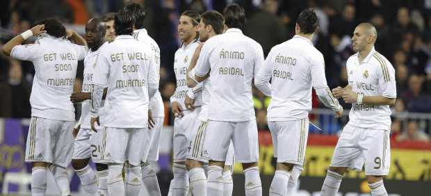
Como indicó Mourinho en la rueda de prensa anterior al partido de Liga ante el Málaga, el Real Madrid ha posado con camisetas de apoyo a Éric Abidal y Fabrice Muamba en los momentos anteriores al pitido inicial.
'Get well soon, Muamba' ('Ponte bien pronto, Muamba) y 'Ánimo Abidal' eran los dos mensajes impresos en las camisetas de los jugadores del conjunto blanco.
El jugador inglés de origen congoleño, Fabrice Muamba, sufrió un desfallecimiento durante el Tottenham - Bolton de la FA Cup el pasado sábado, lo que le llevó a estar sedado en el Centro de Ataques al Corazón del 'London Chest Hospital', bajo cuidados intensivos.
Muamba, internacional sub21 con Inglaterra, fue trasladado al hospital de inmediato al desplomarse sobre el césped y retirado en camilla ante las lágrimas de sus compañeros y la ovación de los aficionados presentes en el estadio de White Hart Lane. Anteriormente los servicios de emergencias trataron de reanimarle durante diez minutos.
Howard Webb, árbitro del encuentro, suspendió el partido tras consultarlo con los respectivos entrenadores, Harry Redknapp y Owen Coyle.
Solidarios por encima de la rivalidad
El lateral del FC Barcelona, Éric Abidal, deberá ser sometido a un trasplante de hígado un año después de que se le diagnosticara un cáncer que le apartó durante dos meses de los terrenos de juego. El francés también ha recibido numerosas muestras de ánimo a través de las redes sociales.
Sus compañeros también le animaron el sábado en el Sánchez Pizjuán. '¡Abi, tornaràs a guanyar!' (Abi, volverás a ganar) fue el mensaje emitido por el equipo de Guardiola ante el Sevilla, que hizo lo propio con una camiseta que rezaba 'Ánimo Abidal'.
2012-03-18T20:02:21Z
El Panathinaikos-Olympiacos, parado 50 minutos por incidentes entre aficionados y policías
El Panathinaikos-Olympiacos, parado 50 minutos por incidentes entre aficionados y policías
EFE
Los seguidores locales lanzaron bengalas, barandillas y asientos a la policía.
Dos miembros de las fuerzas de seguridad resultaron heridos graves.
El encuentro entre el Panathinaikos y el Olympiacos, de la vigésima quinta jornada de la Liga de Grecia, fue suspendido en el descanso debido a los enfrentamientos entre los aficionados de ambos equipos en las gradas del estadio Olímpico de Atenas, y reanudado cincuenta minutos más tarde.El choque entre los dos primeros clasificados de la competición helena, dominada por el Olympiacos que entrena el español Ernesto Valverde con cuatro puntos de renta, fue suspendido cuando concluyó la primera mitad, que terminó con empate sin goles. Minutos más tarde se pudo reanudar el encuentro con normalidad. Los incidentes ya comenzaron antes del encuentro, en los alrededores del estadio del Panathinaikos, y se repitieron en el tramo final de la primera parte. Los seguidores del conjunto local lanzaron bengalas, barandillas y asientos al policía cuando trataba de acceder a la grada y lanzaba gases lacrimógenos. Al menos dos miembros de las fuerzas de seguridad resultaron heridos graves y 57 personas fueron arrestadas. El Panathinaikos ya fue sancionado una vez esta temporada por el comportamiento indisciplinado de sus seguidores y tuvo que jugar un partido a puerta cerrada.
EFE
- Los seguidores locales lanzaron bengalas, barandillas y asientos a la policía.
- Dos miembros de las fuerzas de seguridad resultaron heridos graves.

El encuentro entre el Panathinaikos y el Olympiacos, de la vigésima quinta jornada de la Liga de Grecia, fue suspendido en el descanso debido a los enfrentamientos entre los aficionados de ambos equipos en las gradas del estadio Olímpico de Atenas, y reanudado cincuenta minutos más tarde.
El choque entre los dos primeros clasificados de la competición helena, dominada por el Olympiacos que entrena el español Ernesto Valverde con cuatro puntos de renta, fue suspendido cuando concluyó la primera mitad, que terminó con empate sin goles. Minutos más tarde se pudo reanudar el encuentro con normalidad.
Los incidentes ya comenzaron antes del encuentro, en los alrededores del estadio del Panathinaikos, y se repitieron en el tramo final de la primera parte. Los seguidores del conjunto local lanzaron bengalas, barandillas y asientos al policía cuando trataba de acceder a la grada y lanzaba gases lacrimógenos.
Al menos dos miembros de las fuerzas de seguridad resultaron heridos graves y 57 personas fueron arrestadas. El Panathinaikos ya fue sancionado una vez esta temporada por el comportamiento indisciplinado de sus seguidores y tuvo que jugar un partido a puerta cerrada.
2012-03-18T19:12:34Z
Un hat-trick de Soldado afianza al Valencia en la tercera plaza y complica el objetivo al Athletic
Un hat-trick de Soldado afianza al Valencia en la tercera plaza y complica el objetivo al Athletic
EFE
El Athletic acusó el esfuerzo de hace tres días ante el Manchester United.
Los de Bielsa notaron las ausencias de Fernando Llorente y Amorebieta.
Soldado lidera la tabla de goleadores españoles tras ocho partidos sin marcar.
Estadísticas del partido. | Clasificación.
Roberto Soldado, con los tres goles que han derrotado al Athletic Club en San Mamés, ha reforzado la tercera plaza que ocupa el Valencia en la tabla clasificatoria, a la que se le habían acercado mucho los rivales en las últimas semanas y en la que los de Unai Emery vuelven a poner tierra de por medio. El ariete internacional del conjunto che se ha aprovechado de un grave error de San José en una cesión a Iraizoz para poner por delante a su equipo a poco del descanso; remató imparable una buena jugada de Jordi Alba para ampliar la ventaja llegando a la hora de partido; y cerró el marcador transformando un penalti, por mano de San José, en la parte final del choque.çAunque fue demasiado abultado para lo que se vio sobre el terreno de juego, el marcador final reflejó la superioridad valencianista en el partido sobre un Athletic que acusó el esfuerzo de hace tres días ante el Manchester United y, sobre todo, la ausencia de Fernando Llorente en la punta de ataque. También la de Fernando Amorebieta en un día poco afortunado de Javi Martínez y Mikel San José. El equipo bilbaíno, además, no supo zafarse casi nunca de la presión a la que le sometió el equipo de Unai Emery, bastante más entero sobre el campo a pesar de haber tenido también partido el pasado jueves. Si el triunfo le consolida al Valencia en el tercer puesto, la derrota al Athletic le mantiene fuera de los puestos europeos, de los que queda ahora a dos puntos. Notó mucho de inicio la falta de Llorente el Athletic, que fue incapaz de zafarse de la presión ordenada por Unai Emery. Ello le dio la posesión de balón al Valencia, que mandó durante el primer cuarto de hora y luego mantuvo a los locales lejos de su área. No obstante, tampoco el conjunto 'che' gozaba de oportunidades para marcar y lo más reseñable de la primera media hora fueron un par de caídas en las áreas, en las que ambos equipos pidieron penalti. La primera de Jordi Alba ante Muniain en una posición muy clara y la segunda de San José, también con Jordi como protagonista, en una jugada a balón parado sobre la meta de Guaita. Cuando parecía que un par de disparos sin mayor peligro de Parejo y De Marcos era todo lo que había ofrecido de peligro la primera parte, un clamoroso error de San José en una cesión a Iraizoz permitió a Soldado, que se deshizo con habilidad del meta navarro, adelantar a su equipo.El comienzo de la segunda parte fue más animado que toda la primera mitad, con el Athletic volcado a por el empate y el Valencia intentando sentenciar a la contra. Así, Mathieu a la media vuelta buscó las cosquillas a un Iraizoz bien colocado y poco más tarde Muniain se encontró con el cuerpo de Dealbert en un disparo desde dentro del área. No logró el Athletic aprovechar sus ocasiones y el Valencia sí lo hizo con una de las suyas. Otra vez fue Soldado el que batió a Iraizoz, en esta segunda ocasión aprovechando un buen pase de Jordi Alba tras una buena incorporación al área del catalán, aguantando la presencia de Javi Martínez. Un golpe franco de Ibai que puso en apuros a Guaita precedió al tercer mazazo que recibió el Athletic y que le dejó el triunfo ya casi imposible: la roja a Iraola, por doble amarilla. No obstante, no se entregaron los de Bielsa, que buscaron con ahínco recortar distancias en acciones de Muniain y De Marcos que no finalizaron bien. Pero el Valencia seguía manando y se presentaba con facilidad ante Iraizoz, frente al que Soldado amenazó con hacer un estropicio y acabar la tarde llevándose el balón a casa. No consiguió lo primero, pero sí lo segundo, ya que logró un tercer tanto, de penalti tras mano de San José, que le devuelve a la primera posición de los goleadores nacionales en Liga. - Ficha técnica:0 - Athletic: Iraizoz; Iraola, Javi Martínez, San José, Aurtenetxe; Iturraspe, Herrera (Ekiza, min.71), De Marcos; Muniain, Susaeta e Íñigo Pérez (Ibai Gómez, min.46). 3 - Valencia: Guaita; Barragán (Bruno, min.71), Rami, Dealbert, Jordi Alba; Topal, Parejo: Pablo Hernández (Jonas, min.59), Feghouli, Mathieu (Piatti, min.75); y Soldado. Goles: 0-1, min.41: Soldado. 0-2, min.57: Soldado. 0-3, min.85: Soldado, de penalti. Árbitro: José Antonio Teixiera Vitienes (Comité cántabro). Expulsó a Iraola, en el minuto 67, por doble amonestación, y a un miembro del banquillo del Valencia, en el 82. Además, mostró tarjeta amarilla a los locales Iturraspe, De Marcos y San José, y a los visitantes Barragán, Jordi Alba, Rami, Parejo y Solado. Incidencias: Partido correspondiente a la vigésimo octava jornada de Primera División, presenciado en un San Mamés cerca del lleno, unos 40.000 espectadores. El Athletic vendió todas las localidades disponibles. Tarde fría y terreno de juego en buenas condiciones.
EFE
- El Athletic acusó el esfuerzo de hace tres días ante el Manchester United.
- Los de Bielsa notaron las ausencias de Fernando Llorente y Amorebieta.
- Soldado lidera la tabla de goleadores españoles tras ocho partidos sin marcar.
- Estadísticas del partido. | Clasificación.
Roberto Soldado, con los tres goles que han derrotado al Athletic Club en San Mamés, ha reforzado la tercera plaza que ocupa el Valencia en la tabla clasificatoria, a la que se le habían acercado mucho los rivales en las últimas semanas y en la que los de Unai Emery vuelven a poner tierra de por medio.
El ariete internacional del conjunto che se ha aprovechado de un grave error de San José en una cesión a Iraizoz para poner por delante a su equipo a poco del descanso; remató imparable una buena jugada de Jordi Alba para ampliar la ventaja llegando a la hora de partido; y cerró el marcador transformando un penalti, por mano de San José, en la parte final del choque.
çAunque fue demasiado abultado para lo que se vio sobre el terreno de juego, el marcador final reflejó la superioridad valencianista en el partido sobre un Athletic que acusó el esfuerzo de hace tres días ante el Manchester United y, sobre todo, la ausencia de Fernando Llorente en la punta de ataque. También la de Fernando Amorebieta en un día poco afortunado de Javi Martínez y Mikel San José.
El equipo bilbaíno, además, no supo zafarse casi nunca de la presión a la que le sometió el equipo de Unai Emery, bastante más entero sobre el campo a pesar de haber tenido también partido el pasado jueves.
Si el triunfo le consolida al Valencia en el tercer puesto, la derrota al Athletic le mantiene fuera de los puestos europeos, de los que queda ahora a dos puntos.
Notó mucho de inicio la falta de Llorente el Athletic, que fue incapaz de zafarse de la presión ordenada por Unai Emery. Ello le dio la posesión de balón al Valencia, que mandó durante el primer cuarto de hora y luego mantuvo a los locales lejos de su área.
No obstante, tampoco el conjunto 'che' gozaba de oportunidades para marcar y lo más reseñable de la primera media hora fueron un par de caídas en las áreas, en las que ambos equipos pidieron penalti. La primera de Jordi Alba ante Muniain en una posición muy clara y la segunda de San José, también con Jordi como protagonista, en una jugada a balón parado sobre la meta de Guaita.
Cuando parecía que un par de disparos sin mayor peligro de Parejo y De Marcos era todo lo que había ofrecido de peligro la primera parte, un clamoroso error de San José en una cesión a Iraizoz permitió a Soldado, que se deshizo con habilidad del meta navarro, adelantar a su equipo.
El comienzo de la segunda parte fue más animado que toda la primera mitad, con el Athletic volcado a por el empate y el Valencia intentando sentenciar a la contra. Así, Mathieu a la media vuelta buscó las cosquillas a un Iraizoz bien colocado y poco más tarde Muniain se encontró con el cuerpo de Dealbert en un disparo desde dentro del área.
No logró el Athletic aprovechar sus ocasiones y el Valencia sí lo hizo con una de las suyas. Otra vez fue Soldado el que batió a Iraizoz, en esta segunda ocasión aprovechando un buen pase de Jordi Alba tras una buena incorporación al área del catalán, aguantando la presencia de Javi Martínez.
Un golpe franco de Ibai que puso en apuros a Guaita precedió al tercer mazazo que recibió el Athletic y que le dejó el triunfo ya casi imposible: la roja a Iraola, por doble amarilla. No obstante, no se entregaron los de Bielsa, que buscaron con ahínco recortar distancias en acciones de Muniain y De Marcos que no finalizaron bien.
Pero el Valencia seguía manando y se presentaba con facilidad ante Iraizoz, frente al que Soldado amenazó con hacer un estropicio y acabar la tarde llevándose el balón a casa. No consiguió lo primero, pero sí lo segundo, ya que logró un tercer tanto, de penalti tras mano de San José, que le devuelve a la primera posición de los goleadores nacionales en Liga.
- Ficha técnica:
0 - Athletic: Iraizoz; Iraola, Javi Martínez, San José, Aurtenetxe; Iturraspe, Herrera (Ekiza, min.71), De Marcos; Muniain, Susaeta e Íñigo Pérez (Ibai Gómez, min.46).
3 - Valencia: Guaita; Barragán (Bruno, min.71), Rami, Dealbert, Jordi Alba; Topal, Parejo: Pablo Hernández (Jonas, min.59), Feghouli, Mathieu (Piatti, min.75); y Soldado.
Goles: 0-1, min.41: Soldado. 0-2, min.57: Soldado. 0-3, min.85: Soldado, de penalti.
Árbitro: José Antonio Teixiera Vitienes (Comité cántabro). Expulsó a Iraola, en el minuto 67, por doble amonestación, y a un miembro del banquillo del Valencia, en el 82. Además, mostró tarjeta amarilla a los locales Iturraspe, De Marcos y San José, y a los visitantes Barragán, Jordi Alba, Rami, Parejo y Solado.
Incidencias: Partido correspondiente a la vigésimo octava jornada de Primera División, presenciado en un San Mamés cerca del lleno, unos 40.000 espectadores. El Athletic vendió todas las localidades disponibles. Tarde fría y terreno de juego en buenas condiciones.
2012-03-18T18:21:53Z
Un jugador del Puerta Bonita de Tercera división estuvo un minuto en parada cardíaca
Un jugador del Puerta Bonita de Tercera división estuvo un minuto en parada cardíaca
EFE
Sergio Grandero recibió un golpe en la mandíbula que le dejó inconsciente
Fue durante el partido en el campo del Pozuelo del grupo VII de Tercera.
Ha sido ingresado en el hospital Puerta de Hierro, donde está en observación.
Sergio Granero, defensa del Puerta Bonita, permaneció un minuto en parada cardiorrespiratoria durante el partido del grupo VII de Tercera división jugado en el campo del Pozuelo de Alarcón, que hubo de ser suspendido en el minuto 83.Granero saltó con dos rivales y recibió un golpe en la mandíbula que le dejó inconsciente en el suelo. El fisioterapeuta del club, Héctor García, le aplicó rápidamente una cánula y recibió la ayuda de un médico presente en la grada, padre del jugador del Pozuelo Fernando Monasterio. "El jugador ha sido ingresado en el hospital Puerta de Hierro, donde permanece en observación después de haber recuperado la consciencia", informó el jefe de prensa del Puerta Bonita, Miguel Hernández. "Por momentos se llegó a temer lo peor", añadió Hernández, "pero afortunadamente todas las pruebas que se le están haciendo en el hospital han dado negativo. Permanece hospitalizado sólo por precaución". En el momento de la suspensión, el Pozuelo vencía por 2-0 al Puerta Bonita.
EFE
- Sergio Grandero recibió un golpe en la mandíbula que le dejó inconsciente
- Fue durante el partido en el campo del Pozuelo del grupo VII de Tercera.
- Ha sido ingresado en el hospital Puerta de Hierro, donde está en observación.
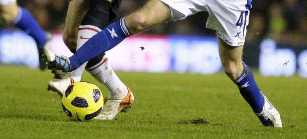
Sergio Granero, defensa del Puerta Bonita, permaneció un minuto en parada cardiorrespiratoria durante el partido del grupo VII de Tercera división jugado en el campo del Pozuelo de Alarcón, que hubo de ser suspendido en el minuto 83.
Granero saltó con dos rivales y recibió un golpe en la mandíbula que le dejó inconsciente en el suelo. El fisioterapeuta del club, Héctor García, le aplicó rápidamente una cánula y recibió la ayuda de un médico presente en la grada, padre del jugador del Pozuelo Fernando Monasterio.
"El jugador ha sido ingresado en el hospital Puerta de Hierro, donde permanece en observación después de haber recuperado la consciencia", informó el jefe de prensa del Puerta Bonita, Miguel Hernández.
"Por momentos se llegó a temer lo peor", añadió Hernández, "pero afortunadamente todas las pruebas que se le están haciendo en el hospital han dado negativo. Permanece hospitalizado sólo por precaución".
En el momento de la suspensión, el Pozuelo vencía por 2-0 al Puerta Bonita.
2012-03-18T17:05:42Z
El Manchester United refuerza su liderato goleando a domicilio
El Manchester United refuerza su liderato goleando a domicilio
EFE
El Woverhampton, colista, no fue rival para el líder de la liga inglesa (0-5).
La ventaja de los 'red devils' sobre el City es de 4 puntos con un partido más.
Estadísticas del partido | Clasificación de la Premier League.
El Manchester United reaccionó a su eliminación en la Europa League ante el Athletic y afianzó su reciente dominio de la clasificación en la actual campaña de la Premier League con una victoria (0-5) sobre el Wolwerhampton, colista de la tabla y que se hundió con el 0-1 y su inferioridad numérica.Jonathan Evans dio ventaja al equipo dirigido por Alex Ferguson a los 21 minutos, pero no sentenció el choque hasta el tramo final de la primera parte, cuando su oponente se quedó con un hombre menos por la expulsión por doble amarilla de Ronald Zubar en el 39. El ecuatoriano Antonio Valencia puso instantes después el 0-2. Danny Wellbeck, segundos antes del descanso, y el mexicano Chicharito Hernández, en dos ocasiones, en los minutos 56 y 61, ampliaron la goleada del Manchester United, con David de Gea como titular y por segunda jornada seguida al frente de la tabla. Tiene cuatro puntos de renta sobre el City, que jugará el miércoles. El encuentro comenzó con un minuto de aplauso para el centrocampista del Bolton Fabrice Muamba, que sigue "en estado crítico y en la unidad de cuidados intensivos" en un hospital de Londres, donde se encuentra ingresado tras desvanecerse este sábado súbitamente durante el partido entre su equipo y el Tottenham.
EFE
- El Woverhampton, colista, no fue rival para el líder de la liga inglesa (0-5).
- La ventaja de los 'red devils' sobre el City es de 4 puntos con un partido más.
- Estadísticas del partido | Clasificación de la Premier League.
El Manchester United reaccionó a su eliminación en la Europa League ante el Athletic y afianzó su reciente dominio de la clasificación en la actual campaña de la Premier League con una victoria (0-5) sobre el Wolwerhampton, colista de la tabla y que se hundió con el 0-1 y su inferioridad numérica.
Jonathan Evans dio ventaja al equipo dirigido por Alex Ferguson a los 21 minutos, pero no sentenció el choque hasta el tramo final de la primera parte, cuando su oponente se quedó con un hombre menos por la expulsión por doble amarilla de Ronald Zubar en el 39. El ecuatoriano Antonio Valencia puso instantes después el 0-2.
Danny Wellbeck, segundos antes del descanso, y el mexicano Chicharito Hernández, en dos ocasiones, en los minutos 56 y 61, ampliaron la goleada del Manchester United, con David de Gea como titular y por segunda jornada seguida al frente de la tabla. Tiene cuatro puntos de renta sobre el City, que jugará el miércoles.
El encuentro comenzó con un minuto de aplauso para el centrocampista del Bolton Fabrice Muamba, que sigue "en estado crítico y en la unidad de cuidados intensivos" en un hospital de Londres, donde se encuentra ingresado tras desvanecerse este sábado súbitamente durante el partido entre su equipo y el Tottenham.
2012-03-18T16:33:33Z
Raúl marca un golazo con la derecha ante el Kaiserslautern
Raúl marca un golazo con la derecha ante el Kaiserslautern
EFE
El rival del Athletic en Europa League golea sin problemas al colista (1-4).
Raúl coló por la escuadra un zurdazo cruzado desde unos 22 metros.
Con la victoria, el Schalke se consolida en el cuarto puesto.
Estadísticas del partido | Clasificación Bundesliga.
El Schalke 04, rival de Athletic de Bilbao en cuartos de final de la Europa League, ha goleado a domicilio al colista, el Kaiserslautern, (1-4) en un partido en el que Raúl se lució con un gran gol en el minuto 51. Los otros goles del Schalke los marcaron Lewis Holtby, en el 39, Klaas-Jan Huntelaar, en el 45, y el peruano Jefferson Farfán en el 81. El Schalke tiene en esta temporada acostumbrados a sus seguidores a pasar por una fase de sufrimiento antes de ganar los partidos y al comienzo las cosas no fueron de otra manera. El Kaiserslautern se fue pronto en ventaja, en el minuto 3, con un remate de cabeza de Rodnei tras una falta lanzada por Rodnei desde la banda derecha. Se trataba de un comienzo de pesadilla para el Schalke, ante todo teniendo en cuenta que la fortaleza de Kaiserslautern en esta temporada ha estado en la parte defensiva donde, pese a ser colista, está a la altura con los equipos de la parte alta de la tabla. Hasta la jornada de hoy, sólo los tres primeros clasificados habían encajado menos goles que los diablos rojos. Sin embargo, el Schalke mostró que ya se ha acostumbrado a jugar con el marcador en contra y mostró una vez su vocación para darle la vuelta a los partidos y empezó a sitiar el área del Kaiserslautern.La primera ocasión clara llegó en el minuto 24 con un remate de cabeza dentro del área pequeña de Klaas-Jan Huntelaar, tras un centro desde la derecha de Raúl, que salió ligeramente desviado. En el 25, Jermaine Jones no acertó en el remate desde excelente posición y en el 32 un gol de Huntelaar, tras un pase de tacón de Raúl, fue anulado por un fuera de juego que fue cuestión de milímetros. El empate llegó en el 39, con un zurdazo de Lewis Holtby desde la media luna que se metió por toda la escuadra. Antes de que terminara el segundo tiempo, ya en el minuto 45, llegó el segundo gol del Schalke. La jugada se originó en una recuperación de pelota de Christian Fuchs en el centro del campo. El austríaco avanzó unos metros y le metió el balón al área a Huntelaar que se deshizo de Rodnei con un regate y marcó de pierna derecha. El Schalke salió en el segundo tiempo en plan de sentenciar el compromiso lo más pronto posible. En el 47 Raúl tuvo una buena ocasión y en el 51 el español el español volvió a aparecer con el mejor gol de la tarde. La jugada la inició Julian Draxler que, tras hacer que varios defensas del Kaiserslautern se ocuparan dentro del área, la tocó hacia atrás hacia Raúl que soltó un zurdazo cruzado desde unos 22 metros que se coló por toda la escuadra. El cuarto llegó en un contragolpe, comandado y finalizado por Farfán, en el minuto 81. Con la victoria, el Schalke se consolida en el cuarto puesto-que le clasificaría a la eliminatoria de la Liga de Campeones- y aumenta a diez puntos su ventaja sobre el quinto que es el Bayer Leverkusen.
EFE
- El rival del Athletic en Europa League golea sin problemas al colista (1-4).
- Raúl coló por la escuadra un zurdazo cruzado desde unos 22 metros.
- Con la victoria, el Schalke se consolida en el cuarto puesto.
- Estadísticas del partido | Clasificación Bundesliga.
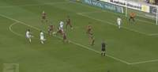
El Schalke 04, rival de Athletic de Bilbao en cuartos de final de la Europa League, ha goleado a domicilio al colista, el Kaiserslautern, (1-4) en un partido en el que Raúl se lució con un gran gol en el minuto 51. Los otros goles del Schalke los marcaron Lewis Holtby, en el 39, Klaas-Jan Huntelaar, en el 45, y el peruano Jefferson Farfán en el 81.
El Schalke tiene en esta temporada acostumbrados a sus seguidores a pasar por una fase de sufrimiento antes de ganar los partidos y al comienzo las cosas no fueron de otra manera. El Kaiserslautern se fue pronto en ventaja, en el minuto 3, con un remate de cabeza de Rodnei tras una falta lanzada por Rodnei desde la banda derecha.
Se trataba de un comienzo de pesadilla para el Schalke, ante todo teniendo en cuenta que la fortaleza de Kaiserslautern en esta temporada ha estado en la parte defensiva donde, pese a ser colista, está a la altura con los equipos de la parte alta de la tabla. Hasta la jornada de hoy, sólo los tres primeros clasificados habían encajado menos goles que los diablos rojos.
Sin embargo, el Schalke mostró que ya se ha acostumbrado a jugar con el marcador en contra y mostró una vez su vocación para darle la vuelta a los partidos y empezó a sitiar el área del Kaiserslautern.
La primera ocasión clara llegó en el minuto 24 con un remate de cabeza dentro del área pequeña de Klaas-Jan Huntelaar, tras un centro desde la derecha de Raúl, que salió ligeramente desviado.
En el 25, Jermaine Jones no acertó en el remate desde excelente posición y en el 32 un gol de Huntelaar, tras un pase de tacón de Raúl, fue anulado por un fuera de juego que fue cuestión de milímetros. El empate llegó en el 39, con un zurdazo de Lewis Holtby desde la media luna que se metió por toda la escuadra.
Antes de que terminara el segundo tiempo, ya en el minuto 45, llegó el segundo gol del Schalke. La jugada se originó en una recuperación de pelota de Christian Fuchs en el centro del campo. El austríaco avanzó unos metros y le metió el balón al área a Huntelaar que se deshizo de Rodnei con un regate y marcó de pierna derecha.
El Schalke salió en el segundo tiempo en plan de sentenciar el compromiso lo más pronto posible. En el 47 Raúl tuvo una buena ocasión y en el 51 el español el español volvió a aparecer con el mejor gol de la tarde.
La jugada la inició Julian Draxler que, tras hacer que varios defensas del Kaiserslautern se ocuparan dentro del área, la tocó hacia atrás hacia Raúl que soltó un zurdazo cruzado desde unos 22 metros que se coló por toda la escuadra.
El cuarto llegó en un contragolpe, comandado y finalizado por Farfán, en el minuto 81.
Con la victoria, el Schalke se consolida en el cuarto puesto-que le clasificaría a la eliminatoria de la Liga de Campeones- y aumenta a diez puntos su ventaja sobre el quinto que es el Bayer Leverkusen.